Étude de cas - Analyse du jeu de données Gym
PHAM Huong
2026-03-30
Last updated: 2026-03-30
Checks: 5 2
Knit directory: Data_Analysis/
This reproducible R Markdown analysis was created with workflowr (version 1.7.2). The Checks tab describes the reproducibility checks that were applied when the results were created. The Past versions tab lists the development history.
The R Markdown is untracked by Git. To know which version of the R
Markdown file created these results, you’ll want to first commit it to
the Git repo. If you’re still working on the analysis, you can ignore
this warning. When you’re finished, you can run
wflow_publish to commit the R Markdown file and build the
HTML.
Great job! The global environment was empty. Objects defined in the global environment can affect the analysis in your R Markdown file in unknown ways. For reproduciblity it’s best to always run the code in an empty environment.
The command set.seed(20260226) was run prior to running
the code in the R Markdown file. Setting a seed ensures that any results
that rely on randomness, e.g. subsampling or permutations, are
reproducible.
Great job! Recording the operating system, R version, and package versions is critical for reproducibility.
Nice! There were no cached chunks for this analysis, so you can be confident that you successfully produced the results during this run.
Using absolute paths to the files within your workflowr project makes it difficult for you and others to run your code on a different machine. Change the absolute path(s) below to the suggested relative path(s) to make your code more reproducible.
| absolute | relative |
|---|---|
| /Users/thanhhuong/R/Data_Analysis | . |
Great! You are using Git for version control. Tracking code development and connecting the code version to the results is critical for reproducibility.
The results in this page were generated with repository version 579dff2. See the Past versions tab to see a history of the changes made to the R Markdown and HTML files.
Note that you need to be careful to ensure that all relevant files for
the analysis have been committed to Git prior to generating the results
(you can use wflow_publish or
wflow_git_commit). workflowr only checks the R Markdown
file, but you know if there are other scripts or data files that it
depends on. Below is the status of the Git repository when the results
were generated:
Ignored files:
Ignored: .DS_Store
Ignored: .Rhistory
Ignored: .Rproj.user/
Ignored: DataMiningwithR/.DS_Store
Ignored: analysis/.DS_Store
Ignored: analysis/.Rhistory
Ignored: analysis/images/
Untracked files:
Untracked: analysis/EDC_Pham.Rmd
Untracked: analysis/PLS_AFCM_quentin.Rmd
Untracked: stats_python_theorie_a_pratique_duverier_djifack_zebaze/
Unstaged changes:
Modified: analysis/EDC_RScript.Rmd
Note that any generated files, e.g. HTML, png, CSS, etc., are not included in this status report because it is ok for generated content to have uncommitted changes.
There are no past versions. Publish this analysis with
wflow_publish() to start tracking its development.
0. Chargement des packages et importation des données
0.1 Packages
packages <- c("MASS", "pls", "rpart", "randomForest", "NbClust")
to_install <- packages[!packages %in% rownames(installed.packages())]
if(length(to_install) > 0) install.packages(to_install)
library(ggplot2)
library(dplyr)
library(tidyr)
library(FactoMineR)
library(factoextra)
library(MASS)
library(pls)
library(rpart)
library(randomForest)
library(NbClust)0.2 Importation des données
setwd("/Users/thanhhuong/R/Data_Analysis")
gym <- read.csv("/Users/thanhhuong/Downloads/M1/Etude de cas/gym_members_exercise_tracking.csv", header = TRUE, sep = ",", dec = ".")
# Renommage propre des variables
colnames(gym) <- c(
"Age", "Gender", "Weight", "Height", "Max_BPM", "Avg_BPM",
"Resting_BPM", "Session_Duration", "Calories_Burned",
"Workout_Type", "Fat_Percentage", "Water_Intake",
"Workout_Frequency", "Experience_Level", "BMI"
)
dim(gym)[1] 973 15str(gym)'data.frame': 973 obs. of 15 variables:
$ Age : int 56 46 32 25 38 56 36 40 28 28 ...
$ Gender : chr "Male" "Female" "Female" "Male" ...
$ Weight : num 88.3 74.9 68.1 53.2 46.1 ...
$ Height : num 1.71 1.53 1.66 1.7 1.79 1.68 1.72 1.51 1.94 1.84 ...
$ Max_BPM : int 180 179 167 190 188 168 174 189 185 169 ...
$ Avg_BPM : int 157 151 122 164 158 156 169 141 127 136 ...
$ Resting_BPM : int 60 66 54 56 68 74 73 64 52 64 ...
$ Session_Duration : num 1.69 1.3 1.11 0.59 0.64 1.59 1.49 1.27 1.03 1.08 ...
$ Calories_Burned : num 1313 883 677 532 556 ...
$ Workout_Type : chr "Yoga" "HIIT" "Cardio" "Strength" ...
$ Fat_Percentage : num 12.6 33.9 33.4 28.8 29.2 15.5 21.3 30.6 28.9 29.7 ...
$ Water_Intake : num 3.5 2.1 2.3 2.1 2.8 2.7 2.3 1.9 2.6 2.7 ...
$ Workout_Frequency: int 4 4 4 3 3 5 3 3 4 3 ...
$ Experience_Level : int 3 2 2 1 1 3 2 2 2 1 ...
$ BMI : num 30.2 32 24.7 18.4 14.4 ...summary(gym) Age Gender Weight Height
Min. :18.00 Length:973 Min. : 40.00 Min. :1.500
1st Qu.:28.00 Class :character 1st Qu.: 58.10 1st Qu.:1.620
Median :40.00 Mode :character Median : 70.00 Median :1.710
Mean :38.68 Mean : 73.85 Mean :1.723
3rd Qu.:49.00 3rd Qu.: 86.00 3rd Qu.:1.800
Max. :59.00 Max. :129.90 Max. :2.000
Max_BPM Avg_BPM Resting_BPM Session_Duration
Min. :160.0 Min. :120.0 Min. :50.00 Min. :0.500
1st Qu.:170.0 1st Qu.:131.0 1st Qu.:56.00 1st Qu.:1.040
Median :180.0 Median :143.0 Median :62.00 Median :1.260
Mean :179.9 Mean :143.8 Mean :62.22 Mean :1.256
3rd Qu.:190.0 3rd Qu.:156.0 3rd Qu.:68.00 3rd Qu.:1.460
Max. :199.0 Max. :169.0 Max. :74.00 Max. :2.000
Calories_Burned Workout_Type Fat_Percentage Water_Intake
Min. : 303.0 Length:973 Min. :10.00 Min. :1.500
1st Qu.: 720.0 Class :character 1st Qu.:21.30 1st Qu.:2.200
Median : 893.0 Mode :character Median :26.20 Median :2.600
Mean : 905.4 Mean :24.98 Mean :2.627
3rd Qu.:1076.0 3rd Qu.:29.30 3rd Qu.:3.100
Max. :1783.0 Max. :35.00 Max. :3.700
Workout_Frequency Experience_Level BMI
Min. :2.000 Min. :1.00 Min. :12.32
1st Qu.:3.000 1st Qu.:1.00 1st Qu.:20.11
Median :3.000 Median :2.00 Median :24.16
Mean :3.322 Mean :1.81 Mean :24.91
3rd Qu.:4.000 3rd Qu.:2.00 3rd Qu.:28.56
Max. :5.000 Max. :3.00 Max. :49.84 Le jeu de données contient 973 individus et 15 variables, ce qui constitue une base suffisamment large pour combiner exploration factorielle et modélisation supervisée. On observe à la fois des variables quantitatives continues (poids, taille, BPM, durée, calories, etc.) et des variables qualitatives (genre, type d’entraînement, niveau d’expérience), ce qui justifie une stratégie mixte associant ACP pour la structure globale, puis modèles supervisés pour la prédiction.
1. Préparation des données
1.1 Mise en forme des variables qualitatives
gym$Gender <- factor(gym$Gender)
gym$Workout_Type <- factor(gym$Workout_Type)
gym$Experience_Level <- factor(gym$Experience_Level)
table(gym$Gender)
Female Male
462 511 table(gym$Workout_Type)
Cardio HIIT Strength Yoga
255 221 258 239 table(gym$Experience_Level)
1 2 3
376 406 191 Les variables qualitatives présentent des
effectifs relativement équilibrés, en particulier
pour Gender et Workout_Type, ce qui limite le
risque qu’une modalité très minoritaire domine artificiellement les
résultats. Experience_Level est un peu moins équilibrée,
avec moins d’individus en niveau 3, mais les effectifs restent
suffisants pour être exploités dans l’AFCM et dans les modèles
supervisés. Cette répartition rend plausible une analyse des effets
qualitatifs sans déséquilibre extrême.
1.2 Séparation quanti / quali
gymQuanti <- gym[, c(
"Age", "Weight", "Height", "Max_BPM", "Avg_BPM",
"Resting_BPM", "Session_Duration", "Calories_Burned",
"Fat_Percentage", "Water_Intake", "Workout_Frequency", "BMI"
)]
gymQuali <- gym[, c("Gender", "Workout_Type", "Experience_Level")]1.3 Création des classes de calories
t1 <- as.numeric(quantile(gym$Calories_Burned, 1/3))
t2 <- as.numeric(quantile(gym$Calories_Burned, 2/3))
gym$Calories_Class <- cut(
gym$Calories_Burned,
breaks = c(-Inf, t1, t2, Inf),
labels = c("Faible", "Moderee", "Haute"),
include.lowest = TRUE
)
gp <- factor(gym$Calories_Class, levels = c("Faible", "Moderee", "Haute"))
t1[1] 784t2[1] 1006table(gp)gp
Faible Moderee Haute
325 324 324 La variable cible qualitative Calories_Class a été
construite à partir
des tertilles de Calories_Burned, avec des
seuils à 784 et 1006, ce qui produit
trois classes presque parfaitement équilibrées: 325 / 324 /
324 individus.
Ce choix est pertinent pour la classification supervisée, car il évite qu’un modèle obtienne de bonnes performances uniquement en favorisant la classe majoritaire. On travaille donc sur une cible ordonnée, mais construite ici avant tout pour disposer d’un problème de classification stable et défendable.
2. Vérifications préalables au nettoyage
2.1 Corrélations entre les BPM et avec les calories
cor_bpm <- cor(gym[, c("Max_BPM", "Avg_BPM", "Resting_BPM")])
cor_bpm_cal <- cor(gym[, c("Max_BPM", "Avg_BPM", "Resting_BPM", "Calories_Burned")])
round(cor_bpm, 3) Max_BPM Avg_BPM Resting_BPM
Max_BPM 1.000 -0.04 0.037
Avg_BPM -0.040 1.00 0.060
Resting_BPM 0.037 0.06 1.000round(cor_bpm_cal[, "Calories_Burned"], 3) Max_BPM Avg_BPM Resting_BPM Calories_Burned
0.002 0.340 0.017 1.000 L’examen des corrélations montre
que Max_BPM et Resting_BPM sont quasi
non
corrélés à Calories_Burned (0.002 et 0.017),
alors que Avg_BPM garde une corrélation positive plus
informative (0.340).
Cela suggère que, dans ce jeu de données, la dépense calorique est
davantage liée à l’intensité moyenne réellement soutenue pendant
la séance qu’aux extrêmes physiologiques. Autrement
dit, Avg_BPM apporte un signal exploitable, tandis
que Max_BPM et Resting_BPMrisquent surtout
d’ajouter du bruit ou de la redondance.
2.2 Redondance du BMI avec Weight et Height
cor_bmi <- cor(gym[, c("BMI", "Weight", "Height")])
round(cor_bmi, 3) BMI Weight Height
BMI 1.000 0.853 -0.159
Weight 0.853 1.000 0.365
Height -0.159 0.365 1.000Le BMI est fortement redondant avec Weight
(0.853) et dépend structurellement de Height.
Le garder en plus du poids et de la taille reviendrait à faire entrer
trois fois à moitié la même information. Son retrait est donc justifié
pour améliorer la lisibilité sans perte d’information substantielle.
2.3 Variables dérivées BPM testées puis rejetées
gym$BPM_amplitude <- gym$Max_BPM - gym$Resting_BPM
gym$BPM_effort <- gym$Avg_BPM - gym$Resting_BPM
gym$BPM_ratio <- gym$Avg_BPM / gym$Max_BPM
cor_bpm_derived <- cor(gym[, c("BPM_amplitude", "BPM_effort", "BPM_ratio", "Calories_Burned")])
cor_bpm_vs_avg <- cor(gym[, c("BPM_effort", "BPM_ratio", "Avg_BPM")])
round(cor_bpm_derived[, "Calories_Burned"], 3) BPM_amplitude BPM_effort BPM_ratio Calories_Burned
-0.007 0.302 0.279 1.000 round(cor_bpm_vs_avg[, "Avg_BPM"], 3)BPM_effort BPM_ratio Avg_BPM
0.885 0.845 1.000 Les variables dérivées n’apportent pas de vrai gain : -
BPM_amplitude reste peu informative, -
BPM_effort et BPM_ratio sont surtout
redondantes avec Avg_BPM.
2.4 Conclusion du nettoyage
On retire donc : - BMI - Max_BPM -
Resting_BPM
On conserve : - Age - Weight -
Height - Avg_BPM -
Session_Duration - Fat_Percentage -
Water_Intake - Workout_Frequency
3. Comparaison ACP V1 (11 variables) vs V2 (8 variables)
3.1 Construction des matrices V1 et V2
gymX_v1 <- gym[, c(
"Age", "Weight", "Height", "Max_BPM", "Avg_BPM",
"Resting_BPM", "Session_Duration", "Fat_Percentage",
"Water_Intake", "Workout_Frequency", "BMI"
)]
gymX_v2 <- gym[, c(
"Age", "Weight", "Height", "Avg_BPM",
"Session_Duration", "Fat_Percentage",
"Water_Intake", "Workout_Frequency"
)]
gymXCR_v1 <- scale(gymX_v1)
gymXCR_v2 <- scale(gymX_v2)
round(apply(gymXCR_v2, 2, mean), 5) Age Weight Height Avg_BPM
0 0 0 0
Session_Duration Fat_Percentage Water_Intake Workout_Frequency
0 0 0 0 round(apply(gymXCR_v2, 2, sd), 5) Age Weight Height Avg_BPM
1 1 1 1
Session_Duration Fat_Percentage Water_Intake Workout_Frequency
1 1 1 1 3.2 ACP sur V1 et V2
resacp_v1 <- princomp(gymXCR_v1, cor = TRUE, scores = TRUE)
resacp_v2 <- princomp(gymXCR_v2, cor = TRUE, scores = TRUE)
var_v1 <- round(resacp_v1$sdev^2 / sum(resacp_v1$sdev^2) * 100, 2)
var_v2 <- round(resacp_v2$sdev^2 / sum(resacp_v2$sdev^2) * 100, 2)
cum_v1 <- round(cumsum(resacp_v1$sdev^2) / sum(resacp_v1$sdev^2) * 100, 2)
cum_v2 <- round(cumsum(resacp_v2$sdev^2) / sum(resacp_v2$sdev^2) * 100, 2)
cat("=== V1 (11 variables) ===\n")=== V1 (11 variables) ===print(var_v1) Comp.1 Comp.2 Comp.3 Comp.4 Comp.5 Comp.6 Comp.7 Comp.8 Comp.9 Comp.10
24.43 17.15 11.32 9.78 9.43 8.96 8.16 4.82 3.17 2.73
Comp.11
0.06 print(cum_v1) Comp.1 Comp.2 Comp.3 Comp.4 Comp.5 Comp.6 Comp.7 Comp.8 Comp.9 Comp.10
24.43 41.58 52.90 62.68 72.11 81.06 89.22 94.04 97.21 99.94
Comp.11
100.00 cat("=== V2 (8 variables) ===\n")=== V2 (8 variables) ===print(var_v2)Comp.1 Comp.2 Comp.3 Comp.4 Comp.5 Comp.6 Comp.7 Comp.8
32.52 19.68 12.99 12.12 7.92 6.64 4.37 3.76 print(cum_v2)Comp.1 Comp.2 Comp.3 Comp.4 Comp.5 Comp.6 Comp.7 Comp.8
32.52 52.20 65.19 77.31 85.23 91.87 96.24 100.00 La comparaison entre V1 et V2 montre que la version nettoyée concentre davantage l’information sur les premiers axes. En V1, les deux premiers axes expliquent 41.58% de l’inertie, contre 52.20% en V2. Les trois premiers axes passent de 52.90% à 65.19%.
Cela signifie que, dans V2, la structure des données est plus lisible et moins diluée dans des dimensions secondaires. Le nettoyage n’a donc pas appauvri le signal, il l’a au contraire rendu plus concentré.
3.3 Corrélations variables / axes
corvar_v1 <- cor(gymXCR_v1, resacp_v1$scores[, 1:3])
corvar_v2 <- cor(gymXCR_v2, resacp_v2$scores[, 1:3])
cat("\n=== V1 — Corrélations variables / axes CP1-CP2-CP3 ===\n")
=== V1 — Corrélations variables / axes CP1-CP2-CP3 ===print(round(corvar_v1, 3)) Comp.1 Comp.2 Comp.3
Age 0.009 0.038 0.011
Weight -0.568 -0.789 -0.069
Height -0.370 -0.186 0.832
Max_BPM -0.043 -0.114 -0.137
Avg_BPM -0.008 -0.008 -0.067
Resting_BPM 0.016 0.040 0.065
Session_Duration -0.642 0.549 -0.252
Fat_Percentage 0.837 -0.265 -0.050
Water_Intake -0.757 -0.114 0.316
Workout_Frequency -0.612 0.544 -0.268
BMI -0.408 -0.731 -0.531cat("\n=== V2 — Corrélations variables / axes CP1-CP2-CP3 ===\n")
=== V2 — Corrélations variables / axes CP1-CP2-CP3 ===print(round(corvar_v2, 3)) Comp.1 Comp.2 Comp.3
Age 0.003 0.039 0.745
Weight -0.383 -0.673 -0.003
Height -0.389 -0.670 -0.029
Avg_BPM -0.004 0.016 0.689
Session_Duration -0.719 0.508 -0.033
Fat_Percentage 0.875 -0.081 -0.007
Water_Intake -0.741 -0.370 0.072
Workout_Frequency -0.687 0.519 -0.035Les corrélations variables-axes confirment que V2 produit une lecture
plus propre. En particulier, dans V1, certaines dimensions restent
polluées par le chevauchement
entre BMI, Weight et Height,
alors qu’en V2 les axes deviennent plus directement interprétables. On
retrouve notamment un axe 1 dominé
par Fat_Percentage, Session_Duration, Water_Intake et Workout_Frequency,
un axe 2 porté par Weight et Height, et un axe
3 davantage lié à Age et Avg_BPM.
La version nettoyée améliore donc non seulement la synthèse, mais aussi l’interprétation substantielle des axes.
3.4 Focus sur CP2
cat("\nFocus CP2 :\n")
Focus CP2 :c(
V1_Weight = round(corvar_v1["Weight", 2], 3),
V1_Height = round(corvar_v1["Height", 2], 3),
V1_BMI = round(corvar_v1["BMI", 2], 3),
V2_Weight = round(corvar_v2["Weight", 2], 3),
V2_Height = round(corvar_v2["Height", 2], 3)
)V1_Weight V1_Height V1_BMI V2_Weight V2_Height
-0.789 -0.186 -0.731 -0.673 -0.670 Le focus sur CP2 illustre bien l’effet du nettoyage.
En V1, CP2 mélange encore la morphologie pure
(Weight) avec la variable dérivée BMI, ce qui
rend l’axe moins net.
En V2, les corrélations
de Weight et Height avec CP2 deviennent
très proches (-0.673 et -0.670), ce
qui permet de lire cet axe comme un axe morphologique
cohérent.
C’est exactement ce qu’on attend d’une bonne réduction de redondance: un axe qui représente une dimension réelle, pas un artefact de codage.
3.5 Validation Random Forest : V1 vs V2
gymDF_v1 <- data.frame(
gymXCR_v1,
Gender = gym$Gender,
Workout_Type = gym$Workout_Type,
Exp_Level = gym$Experience_Level,
Calories_Class = gp
)
gymDF_v2 <- data.frame(
gymXCR_v2,
Gender = gym$Gender,
Workout_Type = gym$Workout_Type,
Exp_Level = gym$Experience_Level,
Calories_Class = gp
)
set.seed(123)
nbrun <- 30
taux_v1 <- taux_v2 <- rep(NA, nbrun)
for(i in 1:nbrun){
idx_test <- sample(1:nrow(gymDF_v1), size = floor(nrow(gymDF_v1) / 2))
idx_app <- setdiff(1:nrow(gymDF_v1), idx_test)
rf1 <- randomForest(Calories_Class ~ ., data = gymDF_v1[idx_app, ], ntree = 200)
rf2 <- randomForest(Calories_Class ~ ., data = gymDF_v2[idx_app, ], ntree = 200)
taux_v1[i] <- mean(predict(rf1, newdata = gymDF_v1[idx_test, ]) == gp[idx_test])
taux_v2[i] <- mean(predict(rf2, newdata = gymDF_v2[idx_test, ]) == gp[idx_test])
}
rf_comp <- data.frame(
Accuracy = c(taux_v1, taux_v2),
Version = factor(rep(c("V1_11_var", "V2_8_var"), each = nbrun),
levels = c("V1_11_var", "V2_8_var"))
)
test_rf <- t.test(taux_v1, taux_v2, paired = TRUE)
print(test_rf)
Paired t-test
data: taux_v1 and taux_v2
t = -8.4435, df = 29, p-value = 2.642e-09
alternative hypothesis: true mean difference is not equal to 0
95 percent confidence interval:
-0.02283376 -0.01392893
sample estimates:
mean difference
-0.01838134 rf_summary <- rf_comp %>%
group_by(Version) %>%
summarise(
mean_accuracy = mean(Accuracy),
sd_accuracy = sd(Accuracy),
.groups = "drop"
)
print(rf_summary)# A tibble: 2 × 3
Version mean_accuracy sd_accuracy
<fct> <dbl> <dbl>
1 V1_11_var 0.849 0.0236
2 V2_8_var 0.868 0.0222mean_v1 <- mean(taux_v1)
sd_v1 <- sd(taux_v1)
mean_v2 <- mean(taux_v2)
sd_v2 <- sd(taux_v2)
cat("V1 (11 vars) :", round(mean_v1 * 100, 2), "% (+/-", round(sd_v1 * 100, 2), "%)\n")V1 (11 vars) : 84.93 % (+/- 2.36 %)cat("V2 ( 8 vars) :", round(mean_v2 * 100, 2), "% (+/-", round(sd_v2 * 100, 2), "%)\n")V2 ( 8 vars) : 86.77 % (+/- 2.22 %)ggplot(rf_comp, aes(x = Version, y = Accuracy, fill = Version)) +
geom_boxplot(alpha = 0.6, width = 0.55, outlier.shape = NA) +
geom_jitter(width = 0.08, alpha = 0.35, size = 1.6) +
labs(
title = "Validation croisée RF : V1 (11 variables) vs V2 (8 variables)",
x = "Version de la matrice X",
y = "Taux de bien classés"
) +
theme_minimal() +
theme(legend.position = "none")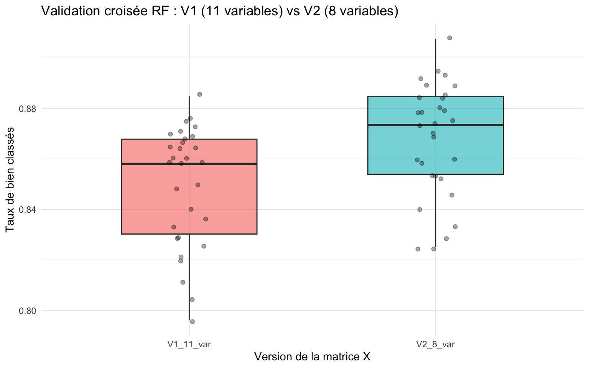
La comparaison par Random Forest confirme que la version nettoyée n’est pas seulement plus élégante sur le papier, elle est aussi meilleure en prédiction. La précision moyenne passe de 84.93% pour V1 à 86.77% pour V2, avec un écart moyen d’environ 1.84 points, et cette différence est hautement significative au t-test apparié (p = 2.642e-09).
On peut donc conclure que la suppression des variables redondantes n’a pas dégradé la performance, mais l’a légèrement améliorée tout en renforçant l’interprétabilité.
4. Construction de la matrice finale pour l’analyse principale
4.1 Matrice X finale
gymX <- gym[, c(
"Age", "Weight", "Height", "Avg_BPM",
"Session_Duration", "Fat_Percentage",
"Water_Intake", "Workout_Frequency"
)]
gymXCR <- scale(gymX, center = TRUE, scale = TRUE)
vecvar <- apply(gymXCR, 2, var)
gymXCRsel <- gymXCR[, vecvar > 0.0001]
dim(gymXCRsel)[1] 973 8round(apply(gymXCRsel, 2, mean), 5) Age Weight Height Avg_BPM
0 0 0 0
Session_Duration Fat_Percentage Water_Intake Workout_Frequency
0 0 0 0 round(apply(gymXCRsel, 2, sd), 5) Age Weight Height Avg_BPM
1 1 1 1
Session_Duration Fat_Percentage Water_Intake Workout_Frequency
1 1 1 1 La matrice finale comporte 973 individus et 8 variables quantitatives, toutes centrées-réduites.
Les moyennes nulles et écarts-types égaux à 1 confirment que la standardisation a bien été réalisée.
cols_gender <- c("Female" = "coral", "Male" = "steelblue")
cols_wt <- c("Cardio" = "green3", "HIIT" = "red", "Strength" = "blue", "Yoga" = "purple")
cols_exp <- c("1" = "lightblue", "2" = "orange", "3" = "darkred")
cols_cal <- c("Faible" = "gold", "Moderee" = "darkorange", "Haute" = "red3")5. ACP exploration
5.1 Calcul de l’ACP
resacp <- princomp(gymXCRsel, cor = TRUE, scores = TRUE)
summary(resacp)Importance of components:
Comp.1 Comp.2 Comp.3 Comp.4 Comp.5
Standard deviation 1.6130397 1.2547342 1.0193182 0.9846990 0.79612631
Proportion of Variance 0.3252371 0.1967948 0.1298762 0.1212040 0.07922714
Cumulative Proportion 0.3252371 0.5220319 0.6519081 0.7731121 0.85233923
Comp.6 Comp.7 Comp.8
Standard deviation 0.72875135 0.59143001 0.54810419
Proportion of Variance 0.06638482 0.04372368 0.03755228
Cumulative Proportion 0.91872404 0.96244772 1.00000000pct_var <- round(resacp$sdev^2 / sum(resacp$sdev^2) * 100, 2)
cum_pct <- round(cumsum(resacp$sdev^2) / sum(resacp$sdev^2) * 100, 2)
pct_varComp.1 Comp.2 Comp.3 Comp.4 Comp.5 Comp.6 Comp.7 Comp.8
32.52 19.68 12.99 12.12 7.92 6.64 4.37 3.76 cum_pctComp.1 Comp.2 Comp.3 Comp.4 Comp.5 Comp.6 Comp.7 Comp.8
32.52 52.20 65.19 77.31 85.23 91.87 96.24 100.00 L’ACP sur la matrice finale montre
que CP1 explique 32.52% de
l’inertie, CP2 19.68% et CP3 12.99%,
soit 65.19%cumulés pour les trois premiers axes.
Ce niveau est satisfaisant pour une ACP en sciences de données appliquées: les premiers axes résument déjà une part importante de l’information tout en laissant subsister une variabilité résiduelle attendue. On peut donc analyser en priorité les plans factoriels associés aux trois premières composantes sans trop perdre la structure principale du nuage.
5.2 Valeurs propres et choix du nombre d’axes
barplot(
resacp$sdev^2,
names.arg = paste0("CP", 1:ncol(gymXCRsel)),
main = "Valeurs propres (éboulis)",
ylab = "Variance expliquée",
col = "steelblue",
las = 2
)
abline(h = 1, col = "red", lty = 2)
saporta <- 1 + 2 * sqrt((ncol(gymXCRsel) - 1) / (nrow(gymXCRsel) - 1))
saporta[1] 1.169725Le choix de 3 axes est cohérent avec plusieurs critères. D’une part, les trois premières valeurs propres restent au-dessus des seuils usuels de sélection, et d’autre part elles résument déjà 65.19% de l’inertie totale.
Dans une logique de synthèse interprétable, retenir 3 axes constitue donc un compromis raisonnable en comptant de représentation et clarté analytique.
5.3 Fonctions de tracé
pct1 <- round(pct_var[1], 1)
pct2 <- round(pct_var[2], 1)
pct3 <- round(pct_var[3], 1)
pcts <- c(pct1, pct2, pct3)
plot_acp_plan <- function(ax1, ax2, couleurs, titre, legende_labels, legende_cols, pcts) {
plot(
resacp$scores[, ax1], resacp$scores[, ax2],
type = "n", asp = 1,
main = titre,
xlab = paste0("CP", ax1, " (", pcts[ax1], "%)"),
ylab = paste0("CP", ax2, " (", pcts[ax2], "%)")
)
abline(h = 0, v = 0, lty = 2, col = "grey")
points(resacp$scores[, ax1], resacp$scores[, ax2], col = couleurs, pch = 16, cex = 0.7)
legend(
"bottomleft",
legend = legende_labels,
col = legende_cols,
pch = 16,
cex = 0.6,
pt.cex = 0.7,
bty = "n"
)
}
plot_cercle <- function(ax1, ax2, corvar, pcts) {
plot(
corvar[, ax1], corvar[, ax2],
xlim = c(-1, 1), ylim = c(-1, 1),
xlab = paste0("CP", ax1, " (", pcts[ax1], "%)"),
ylab = paste0("CP", ax2, " (", pcts[ax2], "%)"),
main = paste0("Cercle des corrélations - Plan CP", ax1, "-CP", ax2),
type = "n", asp = 1
)
angles <- seq(0, 2 * pi, length = 1000)
points(cos(angles), sin(angles), type = "l", col = "blue", lty = 2)
abline(h = 0, v = 0, lty = 2, col = "grey")
arrows(0, 0, corvar[, ax1] * 0.95, corvar[, ax2] * 0.95, length = 0.1, angle = 15)
text(corvar[, ax1], corvar[, ax2], labels = rownames(corvar), cex = 0.8, col = "darkblue")
}5.4 ACP colorée par genre
couleurs_gender <- cols_gender[gym$Gender]
par(mfrow = c(1, 2))
plot_acp_plan(1, 2, couleurs_gender,
"Genre - Plan CP1-CP2",
c("Female", "Male"),
c("coral", "steelblue"),
pcts)
plot_acp_plan(1, 3, couleurs_gender,
"Genre - Plan CP1-CP3",
c("Female", "Male"),
c("coral", "steelblue"),
pcts)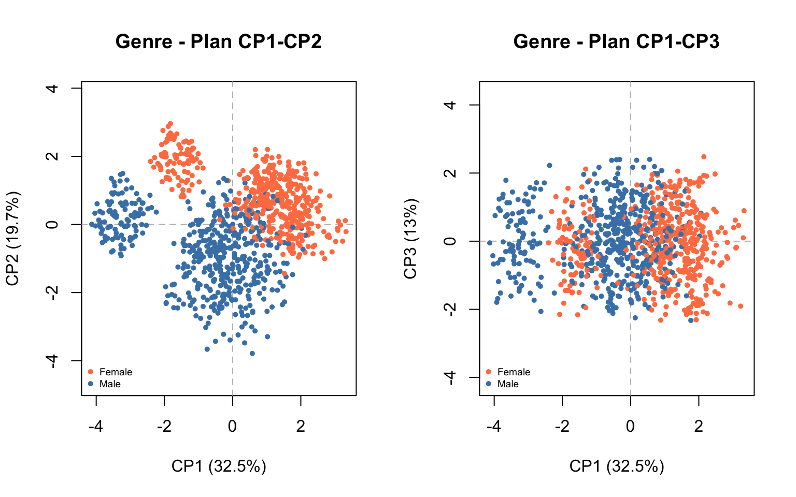
par(mfrow = c(1, 1))La projection colorée par Gender suggère une
structuration surtout visible selon l’axe morphologique, ce qui est
cohérent avec le fait
que Weight et Height contribuent fortement
à CP2.
Autrement dit, le genre ne semble pas organiser principalement le gradient de dépense calorique lui-même, mais davantage un gradient de morphologie corporelle. Son rôle existe, mais il paraît indirect par rapport aux variables de performance
5.5 ACP colorée par type d’entraînement
couleurs_wt <- cols_wt[gym$Workout_Type]
par(mfrow = c(1, 2))
plot_acp_plan(1, 2, couleurs_wt,
"Type d'entraînement - Plan CP1-CP2",
names(cols_wt), cols_wt, pcts)
plot_acp_plan(1, 3, couleurs_wt,
"Type d'entraînement - Plan CP1-CP3",
names(cols_wt), cols_wt, pcts)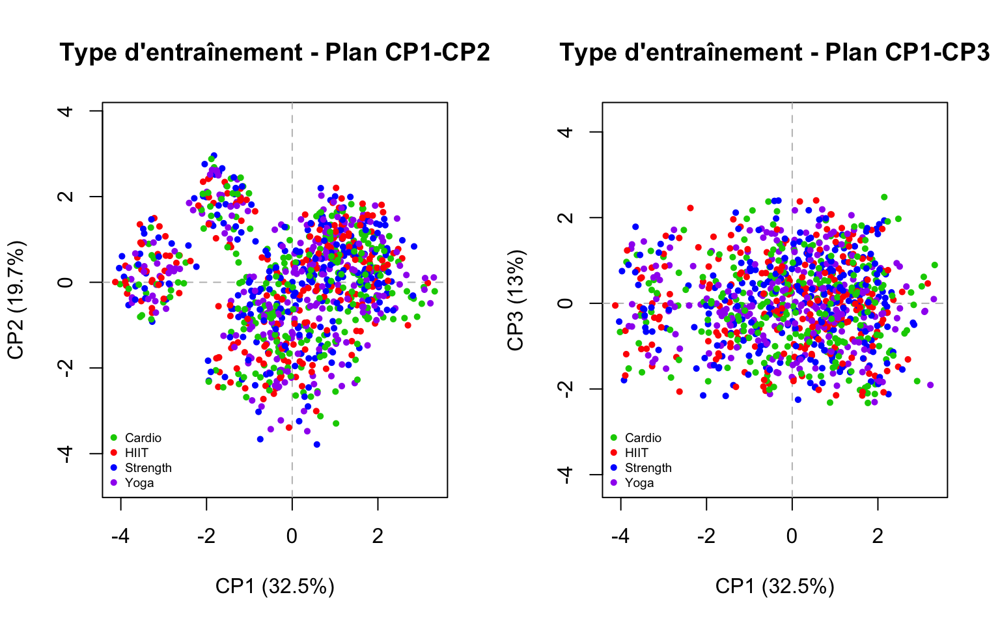
par(mfrow = c(1, 1))La séparation visuelle selon Workout_Type reste faible
sur les plans factoriels principaux.
Cela suggère que, dans ce jeu de données, l’étiquette du sport pratiqué discrimine moins la structure globale que des autres variables quantitatives comme la durée, l’intensité moyenne ou le profil corporel. En pratique, cela veut dire que deux séances de types différents peuvent se retrouver proches.
5.6 ACP colorée par niveau d’expérience
couleurs_exp <- cols_exp[as.character(gym$Experience_Level)]
par(mfrow = c(1, 2))
plot_acp_plan(1, 2, couleurs_exp,
"Niveau d'expérience - Plan CP1-CP2",
c("Niveau 1", "Niveau 2", "Niveau 3"),
cols_exp, pcts)
plot_acp_plan(1, 3, couleurs_exp,
"Niveau d'expérience - Plan CP1-CP3",
c("Niveau 1", "Niveau 2", "Niveau 3"),
cols_exp, pcts)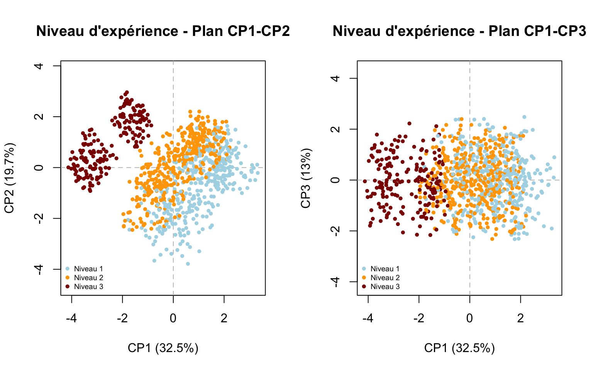
par(mfrow = c(1, 1))La coloration par Experience_Level montre un gradient
surtout aligné sur CP1, ce qui permet d’interpréter cet axe
comme un gradient de condition physique / performance.
Les individus les plus expérimentés tendent à se situer du côté des
profils associés à une meilleure fréquence d’entraînement, une plus
longue durée de séance, une meilleure hydratation et un plus faible
pourcentage de masse grasse. L’expérience semble donc bien liée à la
structuration principale du nuage.
5.7 ACP colorée par classe de calories
couleurs_cal <- cols_cal[as.character(gp)]
par(mfrow = c(1, 2))
plot_acp_plan(1, 2, couleurs_cal,
"Classes de calories - Plan CP1-CP2",
c("Faible", "Moderee", "Haute"),
cols_cal, pcts)
plot_acp_plan(1, 3, couleurs_cal,
"Classes de calories - Plan CP1-CP3",
c("Faible", "Moderee", "Haute"),
cols_cal, pcts)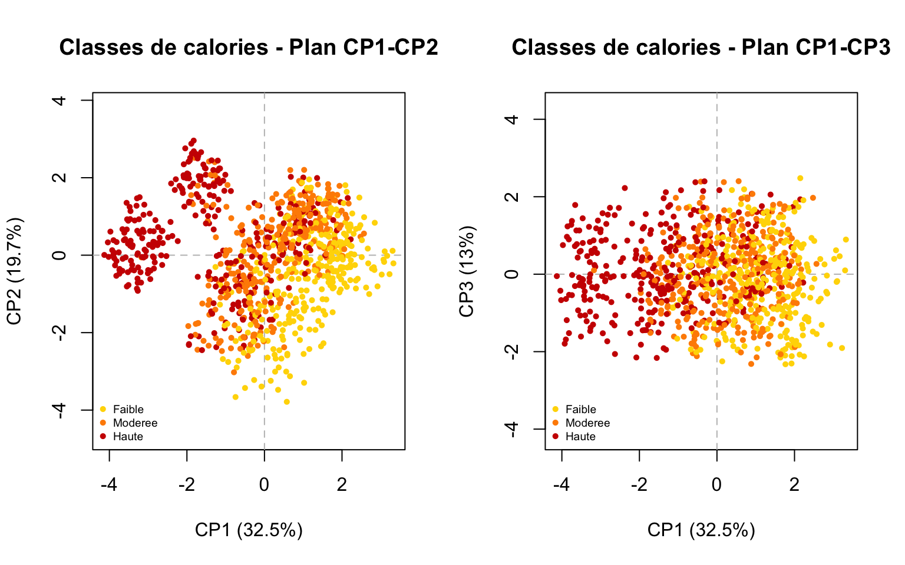
par(mfrow = c(1, 1))Les
classes Faible, Moderee et Haute semblent
surtout se différencier selon CP1, ce qui indique que l’axe
1 capte une grande partie du signal lié à la dépense calorique.
5.8 Cercle des corrélations
corvar <- cor(gymXCRsel, resacp$scores[, 1:3])
par(mfrow = c(1, 2))
plot_cercle(1, 2, corvar, pcts)
plot_cercle(1, 3, corvar, pcts)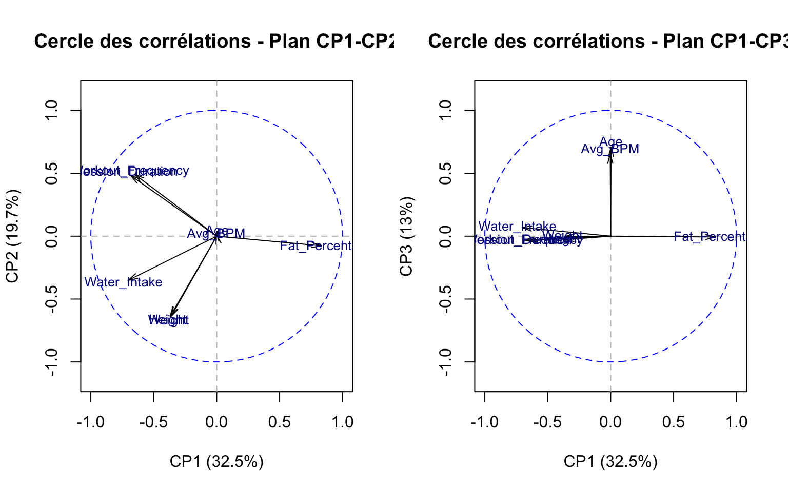
par(mfrow = c(1, 1))
round(corvar, 3) Comp.1 Comp.2 Comp.3
Age 0.003 0.039 0.745
Weight -0.383 -0.673 -0.003
Height -0.389 -0.670 -0.029
Avg_BPM -0.004 0.016 0.689
Session_Duration -0.719 0.508 -0.033
Fat_Percentage 0.875 -0.081 -0.007
Water_Intake -0.741 -0.370 0.072
Workout_Frequency -0.687 0.519 -0.035Le cercle des corrélations permet une lecture claire des trois premiers axes.
CP1 est fortement associé
à Fat_Percentage(0.875) en opposition
à Session_Duration (-0.719), Water_Intake (-0.741)
et Workout_Frequency (-0.687). Cet axe
oppose donc des profils plutôt peu entraînés, plus gras, séances
plus courtes à des profils plus réguliers, mieux
hydratés, séances plus longues.
CP2 est dominé par Weight et Height, ce
qui justifie sa lecture comme axe
morphologique. CP3 est surtout porté
par Age (0.745)
et Avg_BPM (0.689), ce qui suggère une
dimension davantage physiologique.
5.9 Clarify separated groups / extreme individuals
extreme_cp1_pos <- gym %>%
mutate(
CP1 = resacp$scores[, 1],
CP2 = resacp$scores[, 2],
CP3 = resacp$scores[, 3]
) %>%
arrange(desc(CP1)) %>%
dplyr::select(
CP1, Age, Weight, Height, Avg_BPM, Session_Duration,
Fat_Percentage, Water_Intake, Workout_Frequency,
Gender, Workout_Type, Experience_Level, Calories_Burned
) %>%
slice(1:10)
extreme_cp1_neg <- gym %>%
mutate(
CP1 = resacp$scores[, 1],
CP2 = resacp$scores[, 2],
CP3 = resacp$scores[, 3]
) %>%
arrange(CP1) %>%
dplyr::select(
CP1, Age, Weight, Height, Avg_BPM, Session_Duration,
Fat_Percentage, Water_Intake, Workout_Frequency,
Gender, Workout_Type, Experience_Level, Calories_Burned
) %>%
slice(1:10)
cat("=== Individus extrêmes positifs sur CP1 ===\n")=== Individus extrêmes positifs sur CP1 ===print(extreme_cp1_pos) CP1 Age Weight Height Avg_BPM Session_Duration Fat_Percentage
1 3.326071 48 67.1 1.61 151 0.62 33.4
2 3.304776 20 51.1 1.58 169 0.50 29.6
3 3.225635 25 77.7 1.55 120 0.55 33.0
4 3.164844 35 44.6 1.62 157 0.56 32.4
5 3.101214 43 42.7 1.66 134 0.73 33.9
6 3.086378 40 58.1 1.56 136 0.61 34.4
7 3.070507 46 52.0 1.65 147 0.70 34.1
8 3.023875 32 59.0 1.66 160 0.51 31.0
9 2.915918 23 64.5 1.70 125 0.51 30.4
10 2.844461 23 47.4 1.60 154 0.76 33.5
Water_Intake Workout_Frequency Gender Workout_Type Experience_Level
1 1.5 2 Female Cardio 1
2 1.6 2 Female Yoga 1
3 1.7 2 Female Yoga 1
4 2.0 2 Female HIIT 1
5 1.9 2 Female Yoga 1
6 2.2 2 Female Yoga 1
7 1.9 2 Female Cardio 1
8 1.8 2 Female Cardio 1
9 1.7 2 Female Cardio 1
10 1.6 3 Female Strength 1
Calories_Burned
1 421
2 422
3 330
4 440
5 440
6 415
7 463
8 408
9 319
10 585cat("=== Individus extrêmes négatifs sur CP1 ===\n")=== Individus extrêmes négatifs sur CP1 ===print(extreme_cp1_neg) CP1 Age Weight Height Avg_BPM Session_Duration Fat_Percentage
1 -4.130216 19 82.4 1.96 169 1.90 10.1
2 -4.038950 40 87.9 1.87 134 1.96 10.7
3 -4.018842 29 88.1 1.93 143 1.88 11.1
4 -3.973462 39 86.2 1.82 160 1.96 10.2
5 -3.926449 22 86.2 1.90 128 1.91 11.7
6 -3.896962 23 87.3 1.91 129 1.87 11.8
7 -3.893486 41 81.6 1.87 128 1.87 10.2
8 -3.874613 36 84.0 1.94 123 1.80 11.2
9 -3.869089 43 82.9 1.95 160 1.90 12.9
10 -3.853284 46 84.3 2.00 162 1.83 13.3
Water_Intake Workout_Frequency Gender Workout_Type Experience_Level
1 3.5 5 Male HIIT 3
2 3.5 5 Male Strength 3
3 3.5 5 Male Cardio 3
4 3.5 5 Male Strength 3
5 3.5 5 Male Strength 3
6 3.5 5 Male HIIT 3
7 3.5 5 Male HIIT 3
8 3.5 5 Male HIIT 3
9 3.5 5 Male Cardio 3
10 3.5 5 Male HIIT 3
Calories_Burned
1 1766
2 1445
3 1479
4 1725
5 1345
6 1327
7 1185
8 1218
9 1505
10 1467CP3 <- resacp$scores[, 3]
top_CP3 <- order(CP3, decreasing = TRUE)[1:10]
gym[top_CP3, c("Age", "Avg_BPM", "Gender", "Calories_Burned")] Age Avg_BPM Gender Calories_Burned
96 59 169 Female 441
666 58 169 Male 937
336 59 168 Male 1123
148 59 167 Male 885
312 58 168 Male 840
98 58 168 Male 1106
963 57 166 Male 1290
888 55 167 Male 637
913 55 168 Male 640
813 56 168 Male 1148L’examen des individus extrêmes confirme l’interprétation des axes.
Les individus très positifs sur CP1 présentent typiquement
un pourcentage de masse grasse élevé,
une faible fréquence d’entraînement, une courte
durée de séanceet une faible dépense
calorique. À l’inverse, les individus très négatifs
sur CP1 ont un profil opposé: faible masse grasse,
séances longues, fréquence élevée, hydratation élevée et calories
brûlées nettement supérieures. Les individus très positifs
sur CP3 sont plutôt caractérisés par un âge
élevé et un Avg_BPM élevé, ce qui soutient bien la
lecture physiologique de cet axe.
6. CART et Random Forest : détection des facteurs discriminants
6.1 Préparation des jeux de données
gymDF <- data.frame(
as.data.frame(gymXCRsel),
Gender = gym$Gender,
Workout_Type = gym$Workout_Type,
Exp_Level = gym$Experience_Level,
Calories_Class = gp
)
gymDF_reg <- data.frame(
as.data.frame(gymXCRsel),
Gender = gym$Gender,
Workout_Type = gym$Workout_Type,
Exp_Level = gym$Experience_Level,
Calories_Burned = gym$Calories_Burned
)6.2 CART classification
6.2.1 Arbre initial
resrpart <- rpart(
Calories_Class ~ .,
data = gymDF,
control = rpart.control(minsplit = 5)
)
plot(resrpart)
text(resrpart, use.n = TRUE, cex = 0.7)
title("Arbre CART - Classification")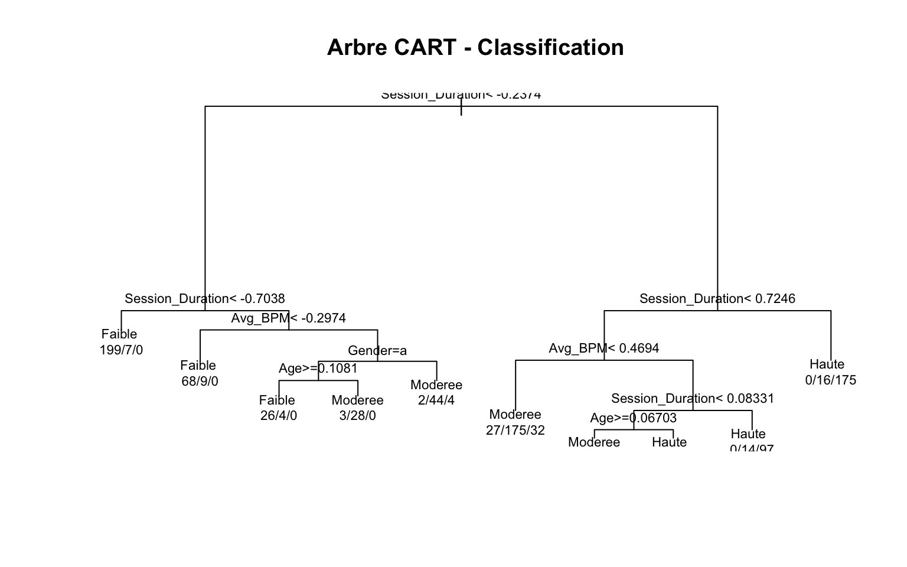
predCART <- predict(resrpart, type = "class")
taux_cart_app <- mean(predCART == gp)
taux_cart_app[1] 0.8746146table(predCART, gp) gp
predCART Faible Moderee Haute
Faible 293 20 0
Moderee 32 271 37
Haute 0 33 287printcp(resrpart)
Classification tree:
rpart(formula = Calories_Class ~ ., data = gymDF, control = rpart.control(minsplit = 5))
Variables actually used in tree construction:
[1] Age Avg_BPM Gender Session_Duration
Root node error: 648/973 = 0.66598
n= 973
CP nsplit rel error xerror xstd
1 0.452160 0 1.00000 1.06636 0.021839
2 0.110340 1 0.54784 0.56019 0.023280
3 0.034722 3 0.32716 0.37191 0.020779
4 0.017747 5 0.25772 0.30401 0.019343
5 0.016975 7 0.22222 0.28549 0.018889
6 0.010000 9 0.18827 0.26852 0.018447plotcp(resrpart)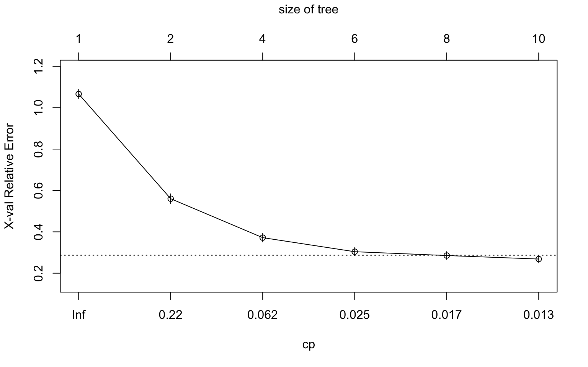
L’arbre CART de classification atteint un taux d’apprentissage de 87.46%, ce qui indique que les classes de calories sont bien structurées par un petit nombre de variables.
Les variables effectivement utilisées dans l’arbre
sont Age, Avg_BPM, Gender et Session_Duration.
La matrice de confusion montre surtout des erreurs entre classes
voisines, notamment autour de la classe Moderee, ce qui est
aussi logique car cette classe intermédiaire est la plus difficile à
trier.
6.2.2 Élagage
cp_opt_class <- resrpart$cptable[which.min(resrpart$cptable[, "xerror"]), "CP"]
resrpart_lag <- prune(resrpart, cp = cp_opt_class)
plot(resrpart_lag)
text(resrpart_lag, use.n = TRUE, cex = 0.7)
title("Arbre CART élagué")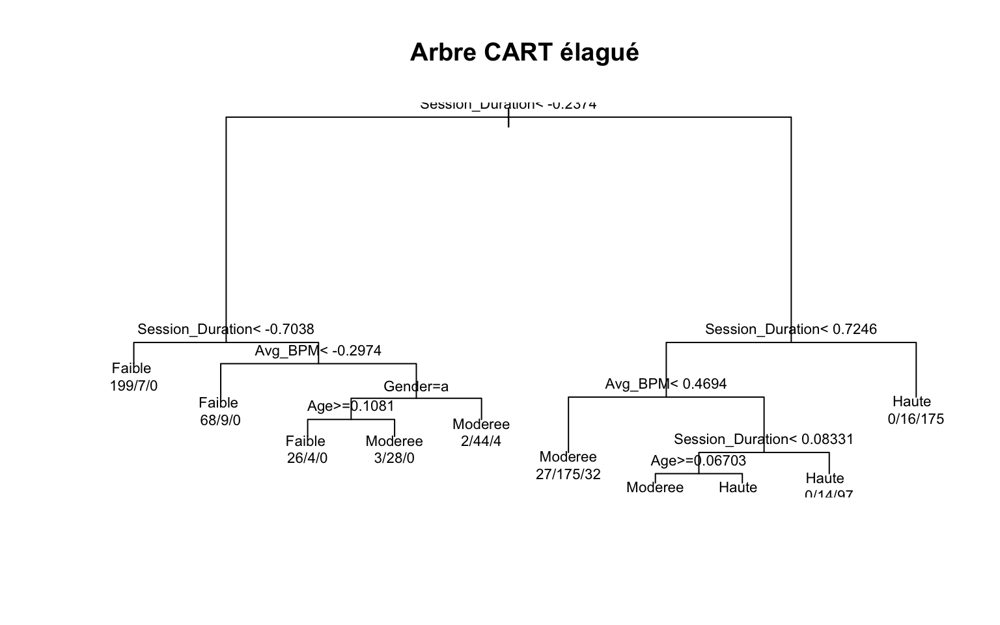
predCART_lag <- predict(resrpart_lag, type = "class")
taux_cart_lag <- mean(predCART_lag == gp)
cp_opt_class[1] 0.01taux_cart_lag[1] 0.8746146table(predCART_lag, gp) gp
predCART_lag Faible Moderee Haute
Faible 293 20 0
Moderee 32 271 37
Haute 0 33 287Après élagage, le taux reste à 87.46%.
C’est un bon signal: le modèle initial captait déjà l’essentiel de la structure utile, et l’élagage permet de conserver un arbre plus simple sans perte apparente de performance.
6.3 CART de régression sur Calories_Burned
resrpart_reg <- rpart(
Calories_Burned ~ .,
data = gymDF_reg,
method = "anova",
control = rpart.control(minsplit = 5)
)
plot(resrpart_reg)
text(resrpart_reg, use.n = FALSE, cex = 0.7)
title("Arbre CART régression - Calories brûlées")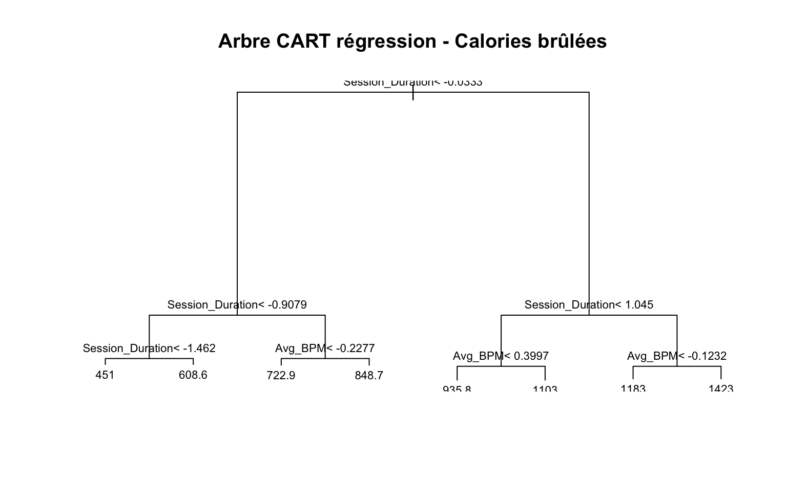
printcp(resrpart_reg)
Regression tree:
rpart(formula = Calories_Burned ~ ., data = gymDF_reg, method = "anova",
control = rpart.control(minsplit = 5))
Variables actually used in tree construction:
[1] Avg_BPM Session_Duration
Root node error: 72252061/973 = 74257
n= 973
CP nsplit rel error xerror xstd
1 0.544231 0 1.00000 1.00210 0.0446964
2 0.124786 1 0.45577 0.46024 0.0216172
3 0.105840 2 0.33098 0.34153 0.0142181
4 0.033752 3 0.22514 0.23852 0.0115059
5 0.030517 4 0.19139 0.21445 0.0108169
6 0.016054 5 0.16087 0.17297 0.0079055
7 0.014485 6 0.14482 0.16036 0.0075989
8 0.010000 7 0.13033 0.14656 0.0074324plotcp(resrpart_reg)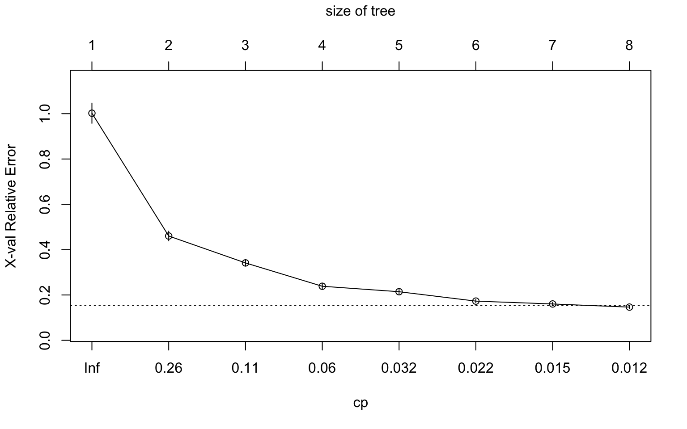
cp_reg <- resrpart_reg$cptable[which.min(resrpart_reg$cptable[, "xerror"]), "CP"]
resrpart_reg_lag <- prune(resrpart_reg, cp = cp_reg)
plot(resrpart_reg_lag)
text(resrpart_reg_lag, use.n = FALSE, cex = 0.7)
title("Arbre CART régression élagué")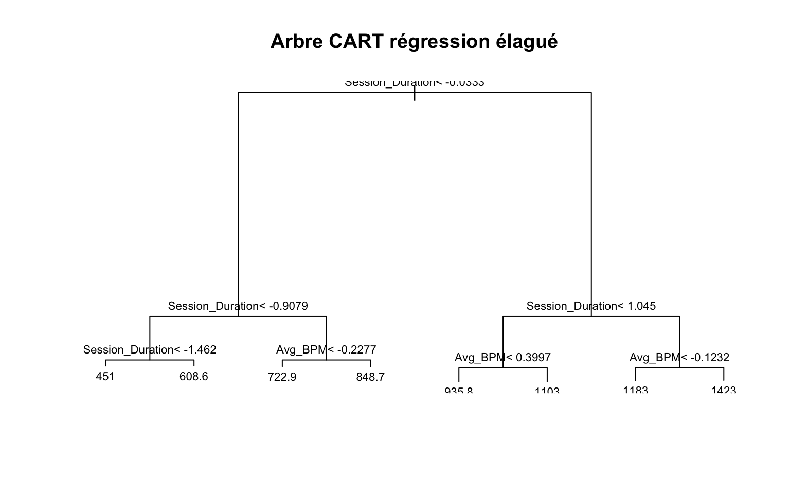
pred_reg <- predict(resrpart_reg_lag)
RMSE_cart <- sqrt(mean((gym$Calories_Burned - pred_reg)^2))
R2_cart <- cor(gym$Calories_Burned, pred_reg)^2
cp_reg[1] 0.01RMSE_cart[1] 98.37825R2_cart[1] 0.8696651L’arbre de régression n’utilise
que Avg_BPM et Session_Duration, ce qui
indique que, pour prédire directement Calories_Burned, ces
deux variables portent l’essentiel du signal.
Les performances obtenues sont RMSE = 98.38 et R² = 0.8697, ce qui traduit une très bonne capacité explicative pour un modèle aussi simple. L’intérêt de ce résultat n’est pas seulement prédictif: il montre aussi que la dépense calorique dépend ici d’abord de l’intensité moyenne soutenue et de la durée de séance, ce qui est en cohérent sur le plan substantiel.
6.4 Random Forest
set.seed(42)
resRF <- randomForest(
Calories_Class ~ .,
data = gymDF,
ntree = 300,
importance = TRUE
)
print(resRF)
Call:
randomForest(formula = Calories_Class ~ ., data = gymDF, ntree = 300, importance = TRUE)
Type of random forest: classification
Number of trees: 300
No. of variables tried at each split: 3
OOB estimate of error rate: 10.38%
Confusion matrix:
Faible Moderee Haute class.error
Faible 301 24 0 0.07384615
Moderee 23 278 23 0.14197531
Haute 0 31 293 0.09567901predRF <- predict(resRF)
taux_rf_app <- mean(predRF == gp)
taux_rf_app[1] 0.8961973table(predRF, gp) gp
predRF Faible Moderee Haute
Faible 301 23 0
Moderee 24 278 31
Haute 0 23 293La Random Forest améliore encore la classification, avec une erreur OOB de 10.38%, soit une précision implicite d’environ 89.62%, très proche du taux d’apprentissage observé (89.62%).
Cette proximité entre performance interne et estimation OOB suggère
que le modèle ne sur-ajuste pas fortement. Comme pour le CART, les
erreurs concernent surtout la classe Moderee, ce qui
confirme que les observations intermédiaires sont naturellement plus
ambiguës que les profils
extrêmes Faible ou Haute
6.4.1 Importance des variables
varImpPlot(resRF, main = "Importance des variables - Random Forest", cex = 0.8)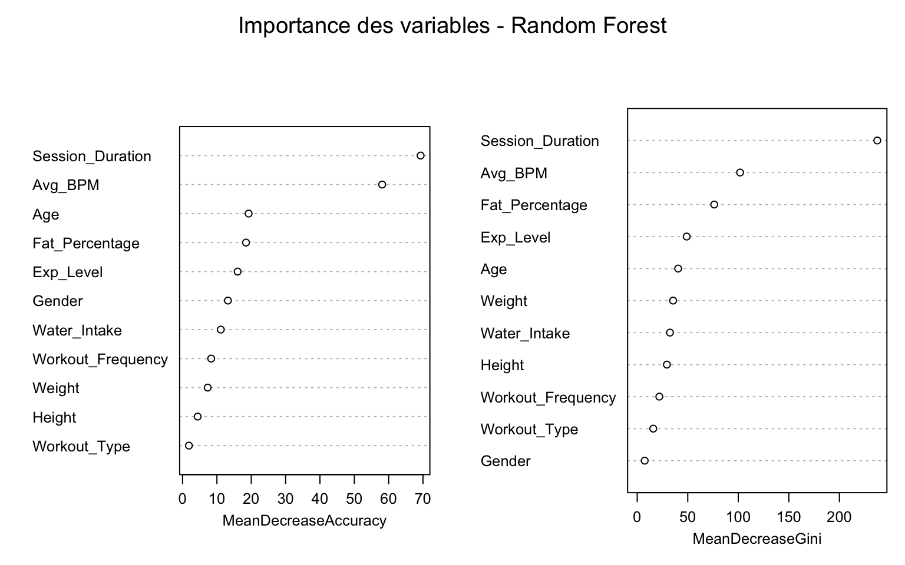
importance_tri <- importance(resRF)
importance_tri[order(importance_tri[, "MeanDecreaseGini"], decreasing = TRUE), ] Faible Moderee Haute MeanDecreaseAccuracy
Session_Duration 97.08330960 45.439288 34.072480 69.302765
Avg_BPM 30.28294974 38.146613 49.531623 58.104299
Fat_Percentage 16.00842131 8.677082 15.992492 18.475560
Exp_Level 16.81423154 5.656092 11.613813 16.027128
Age 11.42543139 10.467438 13.469549 19.236165
Weight 4.12078002 4.362857 4.199424 7.320430
Water_Intake 8.45003496 4.818467 8.330687 11.133618
Height 0.39944622 3.812856 2.337220 4.399645
Workout_Frequency 8.84211010 0.539739 6.258106 8.331626
Workout_Type -0.01501462 1.223171 1.912789 1.849143
Gender 9.88721057 10.180721 6.051229 13.209310
MeanDecreaseGini
Session_Duration 237.502312
Avg_BPM 101.760658
Fat_Percentage 76.186577
Exp_Level 48.955005
Age 40.493704
Weight 35.487951
Water_Intake 32.374737
Height 29.387377
Workout_Frequency 21.881079
Workout_Type 15.851586
Gender 7.410585Les mesures d’importance confirment la hiérarchie déjà suggérée par
l’ACP et le CART. Session_Duration domine très nettement,
suivie de Avg_BPM, puis
de Fat_Percentage et Exp_Level.
Cela signifie que la dépense calorique et ses classes sont
principalement structurées par la charge d’entraînement
et le niveau de condition physique, plus que par des
étiquettes descriptives comme Workout_Type. Le fait
que Workout_Type soit faible dans le classement renforce
l’idée qu’ici, le contenu énergétique de la séance compte davantage que
son nom.
6.4.2 Stabilisation de l’erreur OOB
plot(resRF, main = "Erreur OOB selon le nombre d'arbres")
legend("topright", legend = c("OOB", levels(gp)),
col = 1:(length(levels(gp)) + 1), lty = 1, cex = 0.8)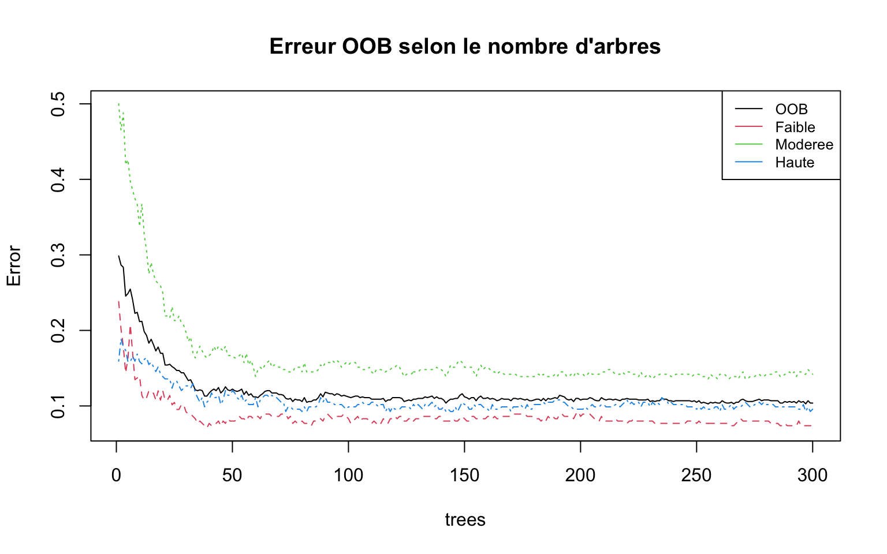
La stabilisation de la courbe d’erreur OOB indique que le nombre d’arbres choisi est suffisant. Au-delà d’un certain point, ajouter des arbres ne change plus significativement l’erreur, ce qui suggère que la forêt a convergé vers une estimation stable. Le modèle est donc suffisamment profond pour être robuste, sans nécessiter un nombre extravagant d’arbres.
7. AFCM + PLS : intégration des variables qualitatives dans une régression supervisée
7.1 AFCM : transformation des variables qualitatives
L’objectif de l’AFCM est ici de transformer les variables
qualitatives (Gender, Workout_Type, Experience_Level)
en composantes numériques synthétiques pouvant ensuite être intégrées
dans une régression supervisée. En pratique, l’AFCM résume la structure
commune des modalités et produit des axes factoriels plus adaptés à une
intégration conjointe avec les variables quantitatives dans une PLS
7.1.1 Chargement des fonctions
# Tắt việc hỏi chuyển trang đồ thị
options(device.ask.default = FALSE)
grDevices::devAskNewPage(FALSE)
# Tạo môi trường riêng để nạp fonctions_afc.R
afc_env <- new.env(parent = globalenv())
# Ghi đè các hàm tương tác hay gây treo khi knit
afc_env$readline <- function(prompt = "") {
cat(prompt, " [auto=6]\n")
"6"
}
afc_env$menu <- function(choices, ...) {
cat("menu() détecté -> choix automatique = 1\n")
1
}
afc_env$scan <- function(file = "", what = "", nmax = 1, quiet = TRUE, ...) {
cat("scan() détecté -> valeur automatique = 6\n")
if (is.numeric(what)) return(6)
if (is.integer(what)) return(6L)
"6"
}
afc_env$devAskNewPage <- function(ask = FALSE) {
grDevices::devAskNewPage(FALSE)
}
afc_env$par <- function(...) {
graphics::par(ask = FALSE, ...)
}
# Charger le fichier dans cet environnement
sys.source("fonctions_afc.R", envir = afc_env)if(!file.exists("fonctions_afc.R")){
stop("Le fichier 'fonctions_afc.R' doit être présent dans le dossier de travail.")
}
source("fonctions_afc.R")7.1.2 Version retenue : codage des quali en entiers puis tableau disjonctif complet
gymQuali_num <- matrix(
c(
as.integer(gym$Gender),
as.integer(gym$Workout_Type),
as.integer(gym$Experience_Level)
),
nrow = nrow(gym),
ncol = 3
)
colnames(gymQuali_num) <- c("Gender", "Workout_Type", "Exp_Level")
rownames(gymQuali_num) <- 1:nrow(gym)
head(gymQuali_num) Gender Workout_Type Exp_Level
1 2 4 3
2 1 2 2
3 1 1 2
4 2 3 1
5 2 3 1
6 1 2 3apply(gymQuali_num, 2, min) Gender Workout_Type Exp_Level
1 1 1 apply(gymQuali_num, 2, max) Gender Workout_Type Exp_Level
2 4 3 any(is.na(gymQuali_num))[1] FALSE# gymQuali_num <- matrix(
# c(as.integer(gym$Gender),
# as.integer(gym$Workout_Type),
# as.integer(gym$Experience_Level)),
# nrow = nrow(gym),
# ncol = 3
# )
#
# colnames(gymQuali_num) <- c("Gender", "Workout_Type", "Exp_Level")
# rownames(gymQuali_num) <- 1:nrow(gym)
#
# gymDC <- afc_env$Codisjc(gymQuali_num)$U
# resafcm <- afc_env$afc(gymDC, k = 6)
#
# coord_afcm <- resafcm$C[, 1:6]
# colnames(coord_afcm) <- paste0("AFCM_", 1:6)
#
# dim(coord_afcm)
# head(coord_afcm)
# summary(coord_afcm)# Les fonctions AFCM interactives ne sont pas compatibles avec workflowr
# car elles nécessitent une interaction utilisateur (terminal).
#
# Solution :
# → utiliser MCA() de FactoMineR (version non-interactive)
# → permet un rendu stable dans R Markdown
# Package pour l'AFCM
if (!require(FactoMineR)) install.packages("FactoMineR")
library(FactoMineR)
# Variables qualitatives
gymQuali <- gym[, c("Gender", "Workout_Type", "Experience_Level")]
# S'assurer que ce sont bien des facteurs
gymQuali$Gender <- factor(gymQuali$Gender)
gymQuali$Workout_Type <- factor(gymQuali$Workout_Type)
gymQuali$Experience_Level <- factor(gymQuali$Experience_Level)
# AFCM non interactive
resafcm <- MCA(gymQuali, ncp = 6, graph = FALSE)
# Coordonnées des individus
coord_afcm <- as.data.frame(resafcm$ind$coord[, 1:6])
colnames(coord_afcm) <- paste0("AFCM_", 1:6)
dim(coord_afcm)[1] 973 6head(coord_afcm) AFCM_1 AFCM_2 AFCM_3 AFCM_4 AFCM_5 AFCM_6
1 1.38858616 0.3112387 -0.5437904 0.29183446 0.4765012 0.2384469
2 -0.01387025 0.1636794 1.0530167 0.07954641 -0.8469911 -0.3299898
3 -0.71639853 -0.1368239 0.1222994 0.88873723 -0.5260412 0.3991092
4 -0.29928283 -0.4309212 -0.2804647 -0.96323507 0.6851659 -0.0565687
5 -0.29928283 -0.4309212 -0.2804647 -0.96323507 0.6851659 -0.0565687
6 0.58725571 1.1018948 1.1043729 0.09878204 0.1026043 0.2621178summary(coord_afcm) AFCM_1 AFCM_2 AFCM_3 AFCM_4
Min. :-1.10458 Min. :-1.135977 Min. :-1.01725 Min. :-1.08931
1st Qu.:-0.32174 1st Qu.:-0.430921 1st Qu.:-0.49092 1st Qu.:-0.48098
Median :-0.01135 Median :-0.008211 Median : 0.06943 Median : 0.07955
Mean : 0.00000 Mean : 0.000000 Mean : 0.00000 Mean : 0.00000
3rd Qu.: 0.39676 3rd Qu.: 0.500790 3rd Qu.: 0.38844 3rd Qu.: 0.29183
Max. : 1.38859 Max. : 1.101895 Max. : 1.10437 Max. : 0.99766
AFCM_5 AFCM_6
Min. :-1.094951 Min. :-1.12114
1st Qu.:-0.419349 1st Qu.:-0.37407
Median : 0.009564 Median :-0.01249
Mean : 0.000000 Mean : 0.00000
3rd Qu.: 0.423554 3rd Qu.: 0.35503
Max. : 1.207119 Max. : 1.35292 On retient ici 6 axes AFCM, ce qui est cohérent avec : \[ (2 + 4 + 3) - 3 = 6 \] soit le nombre maximal d’axes utiles pour 3 variables qualitatives ayant 2, 4 et 3 modalités.
7.1.3 Vérification rapide de cohérence des axes AFCM
aggregate(coord_afcm[, 1] ~ gym$Gender, FUN = mean) gym$Gender coord_afcm[, 1]
1 Female -0.2310881
2 Male 0.2089290aggregate(coord_afcm[, 1] ~ gym$Workout_Type, FUN = mean) gym$Workout_Type coord_afcm[, 1]
1 Cardio -0.5708703
2 HIIT 0.1819312
3 Strength -0.1479668
4 Yoga 0.6005881aggregate(coord_afcm[, 1] ~ gym$Experience_Level, FUN = mean) gym$Experience_Level coord_afcm[, 1]
1 1 -0.3816618
2 2 0.0342941
3 3 0.6784369eta2_afcm <- resafcm$var$eta2
round(eta2_afcm, 3) Dim 1 Dim 2 Dim 3 Dim 4 Dim 5 Dim 6
Gender 0.135 0.028 0.335 0.366 0.044 0.091
Workout_Type 0.524 0.528 0.540 0.463 0.471 0.475
Experience_Level 0.412 0.491 0.140 0.154 0.438 0.365Si les moyennes diffèrent selon les modalités, les axes AFCM
capturent bien de l’information discriminante sur les variables
qualitatives.
Autrement dit, cette étape n’est pas décorative.
7.1.4 Représentation simple des individus sur le plan AFCM 1-2
par(mfrow = c(2, 3))
for(j in 1:6){
barplot(
eta2_afcm[, j],
main = paste("Quelles variables expliquent l'Axe AFCM", j, "?"),
col = "steelblue",
ylab = expression(eta^2)
)
}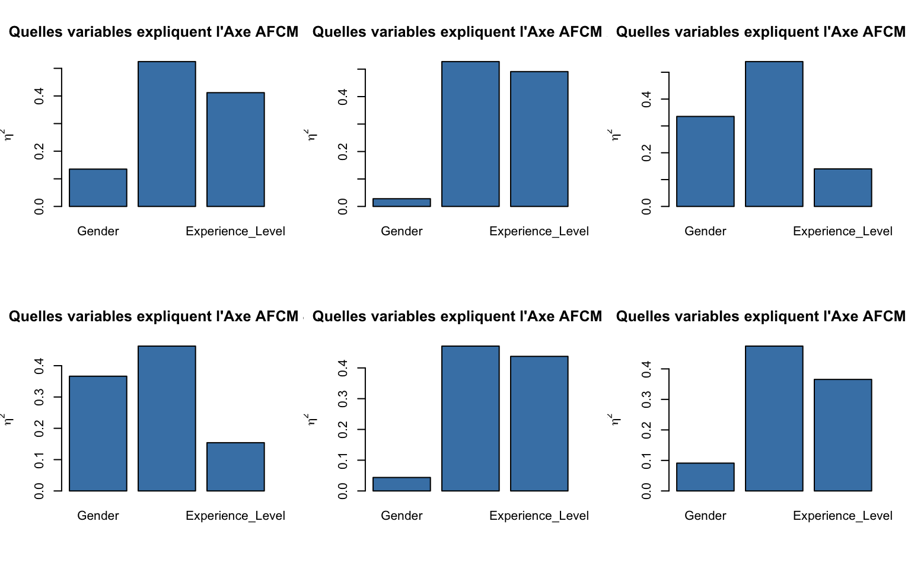
par(mfrow = c(1, 1))coord_modalites <- resafcm$var$coord[, 1:6]
round(coord_modalites, 2) Dim 1 Dim 2 Dim 3 Dim 4 Dim 5 Dim 6
Female -0.39 0.18 0.61 0.64 0.22 -0.32
Male 0.35 -0.16 -0.55 -0.58 -0.20 0.29
Cardio -0.96 0.39 -0.66 0.59 -0.35 0.92
HIIT 0.30 0.92 0.96 -0.80 -0.90 -0.30
Strength -0.25 -1.04 0.53 -0.58 0.97 0.23
Yoga 1.00 -0.14 -0.75 0.74 0.16 -0.95
1 -0.64 0.44 -0.47 -0.49 0.39 -0.61
2 0.06 -0.81 0.27 0.30 -0.76 0.07
3 1.14 0.85 0.36 0.33 0.85 1.06plot(
resafcm,
invisible = c("ind"),
title = "Position des modalités sur AFCM 1 et 2",
col.var = "red"
)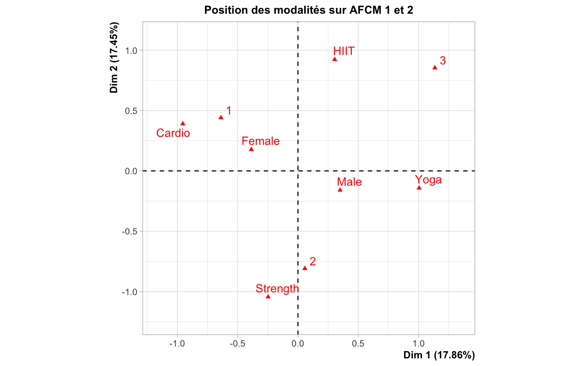
Les graphiques d’eta² permettent d’identifier quelles variables
qualitatives structurent chaque axe AFCM.
Les coordonnées des modalités confirment que certaines catégories,
notamment de Workout_Type et Experience_Level,
contribuent fortement à la structuration du nuage.
7.1.5 Représentation simple des individus sur le plan AFCM 1-2
cols_gender <- c("Female" = "coral", "Male" = "steelblue")
cols_wt <- c("Cardio" = "green3", "HIIT" = "red", "Strength" = "blue", "Yoga" = "purple")
cols_exp <- c("1" = "lightblue", "2" = "orange", "3" = "darkred")
cols_cal <- c("Faible" = "gold", "Moderee" = "darkorange", "Haute" = "red3")
par(mfrow = c(1, 2))
plot(
coord_afcm[, 1], coord_afcm[, 2],
col = cols_gender[gym$Gender], pch = 16, cex = 0.7,
main = "AFCM 1-2 colorée par Gender",
xlab = "AFCM 1", ylab = "AFCM 2"
)
legend("topright", legend = names(cols_gender), col = cols_gender, pch = 16, cex = 0.8)
plot(
coord_afcm[, 1], coord_afcm[, 2],
col = cols_exp[as.character(gym$Experience_Level)], pch = 16, cex = 0.7,
main = "AFCM 1-2 colorée par Experience_Level",
xlab = "AFCM 1", ylab = "AFCM 2"
)
legend("topright", legend = names(cols_exp), col = cols_exp, pch = 16, cex = 0.8)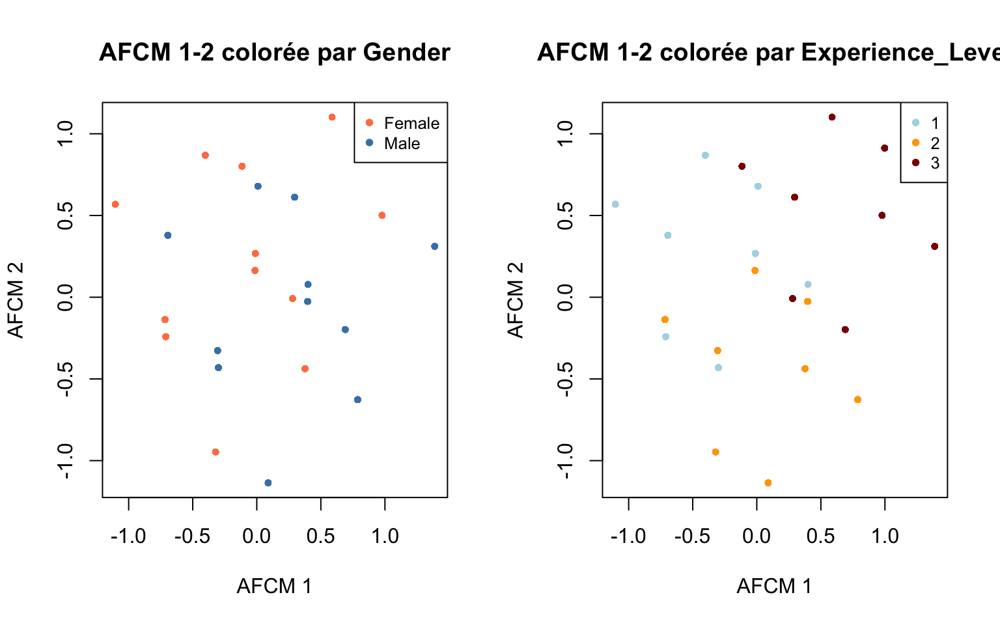
par(mfrow = c(1, 1))7.2 PLS : régression sur composantes
7.2.1 Constitution de la matrice X complète
gymXpls <- data.frame(
as.data.frame(gymXCRsel),
coord_afcm
)
dim(gymXpls)[1] 973 14head(gymXpls) Age Weight Height Avg_BPM Session_Duration
1 1.42161147 0.68114221 -0.09849406 0.9224960 1.2639483
2 0.60065595 0.04929028 -1.50782814 0.5042348 0.1270330
3 -0.54868178 -0.27135099 -0.48997575 -1.5173612 -0.4268488
4 -1.12335065 -0.97393261 -0.17679039 1.4104675 -1.9427358
5 -0.05610847 -1.30871982 0.52787664 0.9922062 -1.7969775
6 1.42161147 -0.74759759 -0.33338307 0.8527858 0.9724315
Fat_Percentage Water_Intake Workout_Frequency AFCM_1 AFCM_2
1 -1.9773038 1.4552185 0.7429130 1.38858616 0.3112387
2 1.4255680 -0.8774464 0.7429130 -0.01387025 0.1636794
3 1.3456884 -0.5442086 0.7429130 -0.71639853 -0.1368239
4 0.6107959 -0.8774464 -0.3523209 -0.29928283 -0.4309212
5 0.6746996 0.2888860 -0.3523209 -0.29928283 -0.4309212
6 -1.5140020 0.1222671 1.8381469 0.58725571 1.1018948
AFCM_3 AFCM_4 AFCM_5 AFCM_6
1 -0.5437904 0.29183446 0.4765012 0.2384469
2 1.0530167 0.07954641 -0.8469911 -0.3299898
3 0.1222994 0.88873723 -0.5260412 0.3991092
4 -0.2804647 -0.96323507 0.6851659 -0.0565687
5 -0.2804647 -0.96323507 0.6851659 -0.0565687
6 1.1043729 0.09878204 0.1026043 0.2621178Y_cal <- gym$Calories_BurnedLa matrice PLS contient donc : - 8 variables quantitatives nettoyées - 6 axes AFCM - soit 14 prédicteurs au total
Cette combinaison est plus logique qu’un PLS sur les seules variables qualitatives. Sinon on aurait juste fabriqué un détour élégant pour perdre de l’information utile.
7.2.2 Découpage apprentissage / test
set.seed(42)
idx_app <- sample(1:nrow(gymXpls), size = floor(0.7 * nrow(gymXpls)))
idx_test <- setdiff(1:nrow(gymXpls), idx_app)
X_app <- gymXpls[idx_app, ]
X_test <- gymXpls[idx_test, ]
Y_app <- Y_cal[idx_app]
Y_test <- Y_cal[idx_test]7.2.3 Centrage-réduction sur l’apprentissage uniquement
mean_app <- apply(X_app, 2, mean)
sd_app <- apply(X_app, 2, sd)
X_appCR <- scale(X_app, center = mean_app, scale = sd_app)
X_testCR <- scale(X_test, center = mean_app, scale = sd_app)
mean_Y <- mean(Y_app)
sd_Y <- sd(Y_app)
Y_appCR <- (Y_app - mean_Y) / sd_Y
Y_testCR <- (Y_test - mean_Y) / sd_Y
data_appCR <- data.frame(X_appCR, Calories = Y_appCR)
data_testCR <- data.frame(X_testCR, Calories = Y_testCR)On centre-réduit le test avec les paramètres de l’apprentissage, sinon on triche sans même s’en rendre compte.
7.2.4 Ajustement PLS sur l’échantillon d’apprentissage
ncomp_max <- min(ncol(X_appCR), 14)
respls <- plsr(
Calories ~ .,
data = data_appCR,
ncomp = ncomp_max,
method = "kernelpls"
)
summary(respls)Data: X dimension: 681 14
Y dimension: 681 1
Fit method: kernelpls
Number of components considered: 14
TRAINING: % variance explained
1 comps 2 comps 3 comps 4 comps 5 comps 6 comps 7 comps
X 23.32 34.34 46.51 51.36 57.88 60.40 66.03
Calories 74.54 89.12 94.47 97.65 97.80 97.89 97.91
8 comps 9 comps 10 comps 11 comps 12 comps 13 comps 14 comps
X 71.98 76.68 80.45 83.92 89.40 92.81 100.00
Calories 97.91 97.91 97.91 97.91 97.91 97.91 97.91Les pourcentages de variance expliquée affichés ici correspondent à l’échantillon d’apprentissage.
7.2.5 Représentation des individus sur le plan PLS 1-2
par(mfrow = c(2, 2))
plot(
respls$scores[, 1], respls$scores[, 2],
main = "Plan des individus PLS selon les calories",
xlab = "PLS 1", ylab = "PLS 2",
pch = 16, cex = 0.8,
col = cols_cal[as.character(gp[idx_app])]
)
abline(h = 0, v = 0, lty = 2, col = "grey")
legend("topright", legend = names(cols_cal), col = cols_cal, pch = 16, cex = 0.8)
plot(
respls$scores[, 1], respls$scores[, 2],
main = "Plan des individus PLS selon Gender",
xlab = "PLS 1", ylab = "PLS 2",
pch = 16, cex = 0.8,
col = cols_gender[as.character(gym$Gender[idx_app])]
)
abline(h = 0, v = 0, lty = 2, col = "grey")
legend("topright", legend = names(cols_gender), col = cols_gender, pch = 16, cex = 0.7)
plot(
respls$scores[, 1], respls$scores[, 2],
main = "Plan des individus PLS selon Workout_Type",
xlab = "PLS 1", ylab = "PLS 2",
pch = 16, cex = 0.8,
col = cols_wt[as.character(gym$Workout_Type[idx_app])]
)
abline(h = 0, v = 0, lty = 2, col = "grey")
legend("topright", legend = names(cols_wt), col = cols_wt, pch = 16, cex = 0.7)
plot(
respls$scores[, 1], respls$scores[, 2],
main = "Plan des individus PLS selon Experience_Level",
xlab = "PLS 1", ylab = "PLS 2",
pch = 16, cex = 0.8,
col = cols_exp[as.character(gym$Experience_Level[idx_app])]
)
abline(h = 0, v = 0, lty = 2, col = "grey")
legend("topright", legend = names(cols_exp), col = cols_exp, pch = 16, cex = 0.7)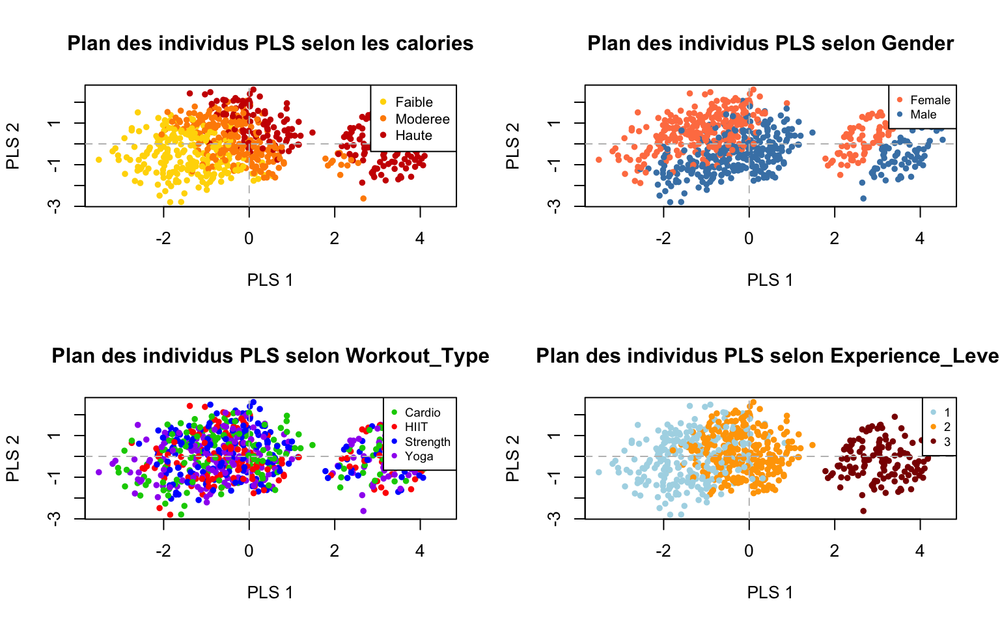
par(mfrow = c(1, 1))7.2.6 Cercle des corrélations PLS
corvar_pls <- cor(data_appCR[, -ncol(data_appCR)], respls$scores[, 1:2])
plot(
corvar_pls[, 1], corvar_pls[, 2],
xlim = c(-1, 1), ylim = c(-1, 1),
xlab = "PLS 1", ylab = "PLS 2",
main = "Cercle des corrélations - PLS",
type = "n", asp = 1
)
symbols(0, 0, circles = 1, inches = FALSE, add = TRUE, lty = 2)
abline(h = 0, v = 0, lty = 2, col = "grey")
arrows(0, 0, corvar_pls[, 1] * 0.95, corvar_pls[, 2] * 0.95, length = 0.1, angle = 15)
text(corvar_pls[, 1], corvar_pls[, 2], labels = rownames(corvar_pls), cex = 0.7, col = "purple")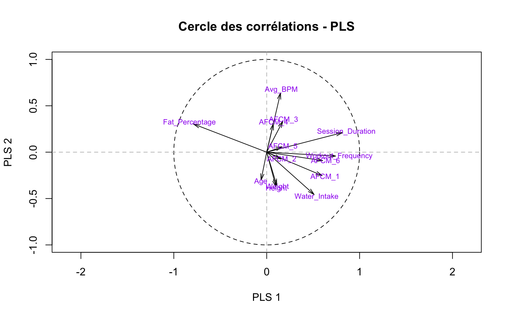
7.2.7 Choix du nombre optimal de composantes par CV répétée
set.seed(123)
nbrun_cv <- 100
PRESS100CV <- matrix(NA, nrow = nbrun_cv, ncol = ncomp_max)
R2_100CV <- matrix(NA, nrow = nbrun_cv, ncol = ncomp_max)
for(r in 1:nbrun_cv){
idx_cv_test <- sample(1:nrow(data_appCR), size = floor(nrow(data_appCR)/2))
idx_cv_app <- setdiff(1:nrow(data_appCR), idx_cv_test)
data_cv_app <- data_appCR[idx_cv_app, ]
data_cv_test <- data_appCR[idx_cv_test, ]
mod_cv <- plsr(Calories ~ ., data = data_cv_app, validation = "none")
for(k in 1:ncomp_max){
pred_cv <- as.numeric(predict(mod_cv, newdata = data_cv_test, ncomp = k))
y_cv <- data_cv_test$Calories
PRESS100CV[r, k] <- sum((y_cv - pred_cv)^2)
R2_100CV[r, k] <- cor(pred_cv, y_cv)^2
}
}
PRESS100moy <- colMeans(PRESS100CV, na.rm = TRUE)
R2_100moy <- colMeans(R2_100CV, na.rm = TRUE)
perf_cv <- data.frame(
ncomp = 1:ncomp_max,
PRESS_CV = PRESS100moy,
R2_CV = R2_100moy
)
print(perf_cv) ncomp PRESS_CV R2_CV
1 1 88.470264 0.7432711
2 2 38.631511 0.8881023
3 3 20.744187 0.9399766
4 4 9.124620 0.9737335
5 5 8.156816 0.9765439
6 6 7.819785 0.9775306
7 7 7.731623 0.9777854
8 8 7.718186 0.9778210
9 9 7.718947 0.9778198
10 10 7.718719 0.9778203
11 11 7.715671 0.9778281
12 12 7.715027 0.9778300
13 13 7.714613 0.9778311
14 14 7.714532 0.9778313par(mfrow = c(1, 2 ))
plot(1:ncomp_max, PRESS100moy, type = "b",
xlab = "Nb de composantes", ylab = "PRESS moyen",
main = "PRESS moyen (100 runs)")
plot(1:ncomp_max, R2_100moy, type = "b",
xlab = "Nb de composantes", ylab = "R² CV moyen",
main = "R² CV moyen (100 runs)")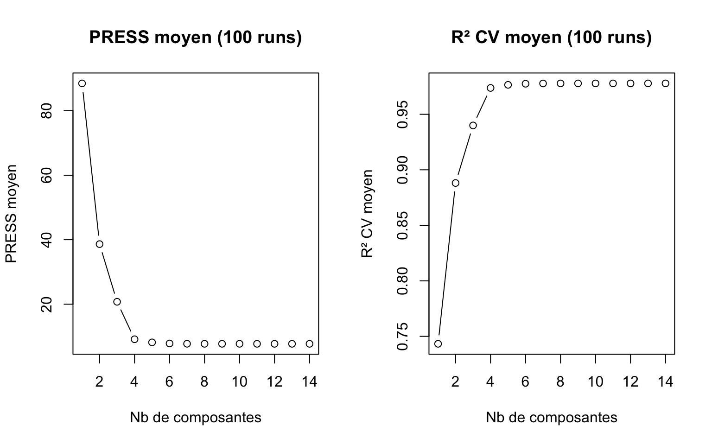
ncomp_opt <- perf_cv$ncomp[which.min(perf_cv$PRESS_CV)]
ncomp_opt[1] 14ggplot(perf_cv, aes(x = ncomp, y = PRESS_CV)) +
geom_line() +
geom_point() +
geom_vline(xintercept = ncomp_opt, linetype = 2, color = "red") +
labs(
title = "PLS - choix du nombre de composantes par validation croisée",
x = "Nombre de composantes",
y = "PRESS moyen"
) +
theme_minimal()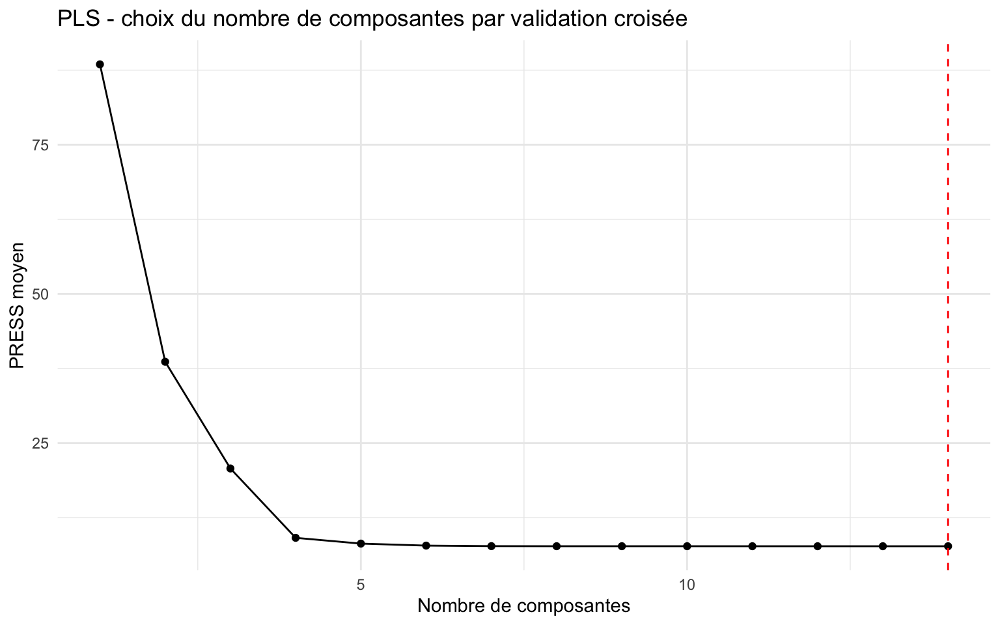
Le critère du PRESS moyen suggère un optimum autour de 14 composantes, correspondant au minimum de l’erreur de prédiction. Toutefois, l’analyse de la courbe montre que la majeure partie de la réduction d’erreur est obtenue dès les premières composantes, avec un net ralentissement après 4 composantes. Le choix de 4 composantes correspond donc à un compromis entre performance prédictive et parcimonie du modèle, en évitant d’ajouter des dimensions apportant un gain marginal tout en augmentant la complexité et le risque de sur-ajustement.
7.2.7 Évaluation sur l’échantillon test
pred_test_cr <- as.vector(predict(respls, newdata = data_testCR, ncomp = ncomp_opt))
pred_test_raw <- pred_test_cr * sd_Y + mean_Y
R2_test_pls <- 1 - sum((Y_test - pred_test_raw)^2) / sum((Y_test - mean(Y_test))^2)
RMSE_test_pls <- sqrt(mean((Y_test - pred_test_raw)^2))
MAE_test_pls <- mean(abs(Y_test - pred_test_raw))
cat("R² test :", round(R2_test_pls, 4), "\n")R² test : 0.9784 cat("RMSE test :", round(RMSE_test_pls, 2), "\n")RMSE test : 39.25 cat("MAE test :", round(MAE_test_pls, 2), "\n")MAE test : 30.87 Un bon résultat sur le jeu test signifie que la combinaison : - des variables physiologiques, - des variables comportementales, - et des axes AFCM issus des qualitatives permet de prédire correctement la dépense calorique.
7.2.8 Comparaison apprentissage / test
pred_app_cr <- as.vector(predict(respls, newdata = data_appCR, ncomp = ncomp_opt))
pred_app_raw <- pred_app_cr * sd_Y + mean_Y
R2_app_pls <- 1 - sum((Y_app - pred_app_raw)^2) / sum((Y_app - mean(Y_app))^2)
RMSE_app_pls <- sqrt(mean((Y_app - pred_app_raw)^2))
MAE_app_pls <- mean(abs(Y_app - pred_app_raw))
comparatif_pls <- data.frame(
Metrique = c("R²", "RMSE", "MAE"),
Apprentissage = c(round(R2_app_pls, 4), round(RMSE_app_pls, 2), round(MAE_app_pls, 2)),
Test = c(round(R2_test_pls, 4), round(RMSE_test_pls, 2), round(MAE_test_pls, 2))
)
comparatif_pls Metrique Apprentissage Test
1 R² 0.9791 0.9784
2 RMSE 39.7000 39.2500
3 MAE 29.9000 30.87007.2.9 Scores VIP
vip_scores <- function(model, ncomp){
SS <- c(model$Yloadings[, 1:ncomp])^2 * colSums(model$scores[, 1:ncomp]^2)
W <- model$loading.weights[, 1:ncomp]
p <- nrow(W)
VIP <- sqrt(p * rowSums(sweep(W^2, 2, SS, "*")) / sum(SS))
VIP
}
vip <- vip_scores(respls, ncomp = ncomp_opt)
vip_df <- data.frame(Variable = names(vip), VIP = vip)
vip_df <- vip_df[order(vip_df$VIP, decreasing = TRUE), ]
vip_df Variable VIP
Session_Duration Session_Duration 2.1100580
Fat_Percentage Fat_Percentage 1.3602910
Workout_Frequency Workout_Frequency 1.3224789
Avg_BPM Avg_BPM 1.2479740
AFCM_6 AFCM_6 1.0865337
AFCM_1 AFCM_1 1.0491005
Water_Intake Water_Intake 0.9028281
Age Age 0.5537098
AFCM_3 AFCM_3 0.5463442
Height Height 0.4265854
Weight Weight 0.4098266
AFCM_4 AFCM_4 0.4038104
AFCM_5 AFCM_5 0.3253002
AFCM_2 AFCM_2 0.2659057par(mar = c(10, 4, 4, 2))
barplot(
vip_df$VIP,
names.arg = vip_df$Variable,
las = 2, cex.names = 0.65,
col = ifelse(vip_df$VIP >= 1, "steelblue", "lightgrey"),
main = "Scores VIP - PLS",
ylab = "VIP"
)
abline(h = 1, col = "red", lty = 2)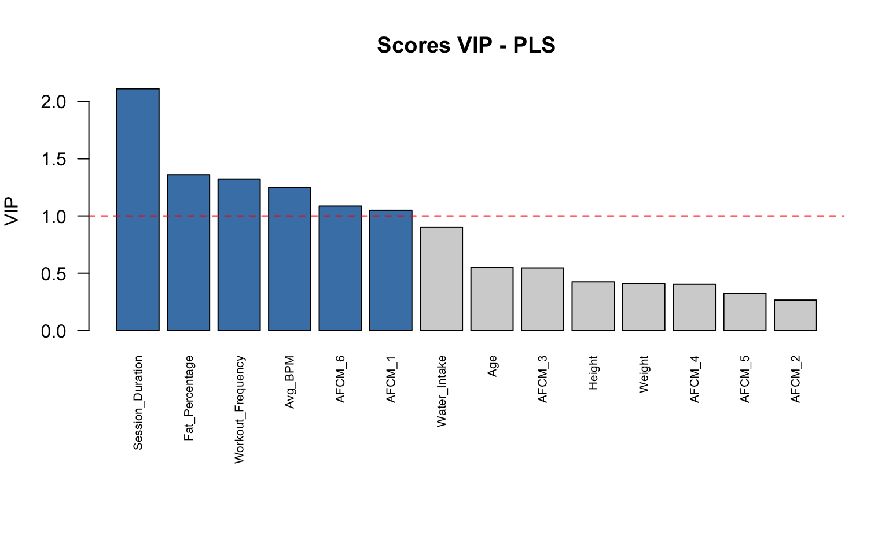
par(mar = c(5, 4, 4, 2))Les scores VIP permettent d’identifier les variables les plus
contributives dans la projection prédictive de la PLS. Ici, les
variables avec VIP > 1 sont
surtout Session_Duration (2.11), Fat_Percentage (1.36), Workout_Frequency (1.32), Avg_BPM (1.25),
ainsi que certaines composantes AFCM
comme AFCM_6 et AFCM_1. Cela confirme que la
prédiction de la dépense calorique dépend principalement de la charge
d’entraînement et de la condition physique, mais que l’information
qualitative n’est pas nulle pour autant. Elle contribue par des
composantes factorisées
PLS vs CART/RF
La hiérarchie des VIP est globalement cohérente avec les résultats du
CART et de la Random
Forest: Session_Durationet Avg_BPM restent
centrales, tandis
que Fat_Percentage et Experience_Level jouent
aussi un rôle important.
8. LDA sur les classes de calories
8.1 Ajustement LDA
gymXlda <- as.matrix(gymXCRsel)
reslda <- lda(x = gymXlda, grouping = gp)
respred <- predict(reslda, newdata = gymXlda)
taux_lda_app <- mean(respred$class == gp)
taux_lda_app[1] 0.8715313table(respred$class, gp) gp
Faible Moderee Haute
Faible 273 12 0
Moderee 52 304 53
Haute 0 8 271tapply(respred$class == gp, gp, mean) * 100 Faible Moderee Haute
84.00000 93.82716 83.64198 La LDA obtient un taux de bien classés de 87.15% sur
l’échantillon complet. Les
classes Faible et Haute sont bien reconnues,
tandis que les erreurs concernent surtout la
classe Moderee, ce qui est logique pour une classe
intermédiaire. Le fait qu’une méthode linéaire atteigne
déjà une performance élevée montre que la structure discriminante des
classes est assez nette dans l’espace des variables retenues. La
séparation n’a donc pas besoin d’être extrêmement non linéaire pour être
pertinente.
8.2 Plan discriminant 1-2
plot(respred$x[, 1:2], type = "n",
main = "Plan discriminant LDA - Classes de calories",
xlab = "LD1", ylab = "LD2")
abline(v = 0, h = 0, lty = 2, col = "grey")
cols_lda <- c("Faible" = "gold", "Moderee" = "darkorange", "Haute" = "red3")
colmoi <- cols_lda[as.character(gp)]
colmoi[respred$class != gp] <- "black"
text(respred$x[, 1:2], labels = as.character(gp), col = colmoi, cex = 0.6)
legend("topright",
legend = c("Faible", "Moderee", "Haute", "Erreur classif."),
col = c("gold", "darkorange", "red3", "black"),
pch = 1, cex = 0.8)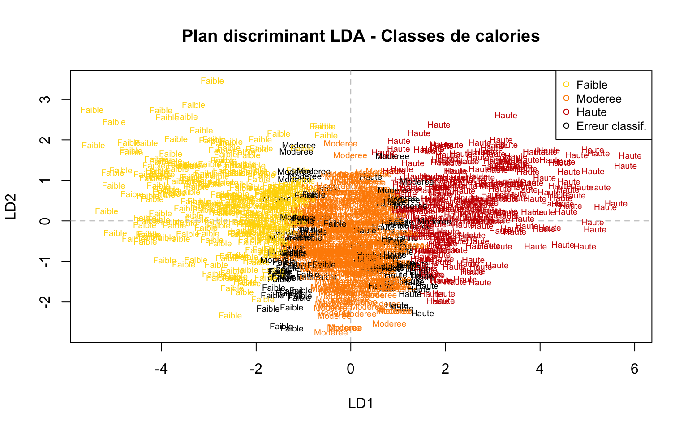
Le plan discriminant permet de visualiser la séparation entre les trois classes de calories dans l’espace construit par la LDA. Si les observations mal classées se concentrent principalement aux frontières entre classes adjacentes, cela signifie que le modèle capte bien le gradient principal mais que certaines observations restent naturellement intermédiaires.
8.3 Cercle des corrélations LDA
corvar_lda <- cor(gymXlda, respred$x[, 1:2])
plot(corvar_lda[, 1], corvar_lda[, 2],
xlim = c(-1, 1), ylim = c(-1, 1),
xlab = "LD1", ylab = "LD2",
main = "Cercle des corrélations - LDA",
type = "n", asp = 1)
angles <- seq(0, 2 * pi, length = 500)
points(cos(angles), sin(angles), type = "l", lty = 2)
abline(h = 0, v = 0, lty = 2, col = "grey")
arrows(0, 0, corvar_lda[, 1] * 0.95, corvar_lda[, 2] * 0.95, length = 0.1, angle = 15)
text(corvar_lda[, 1], corvar_lda[, 2], labels = rownames(corvar_lda), cex = 0.8, col = "darkblue")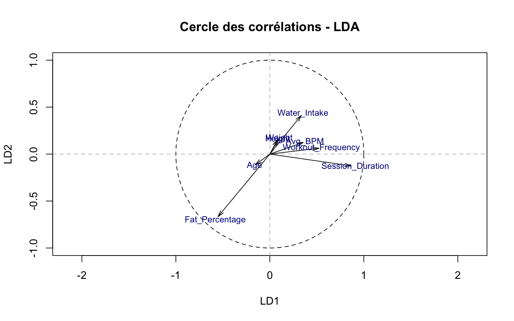
round(corvar_lda, 3) LD1 LD2
Age -0.163 -0.120
Weight 0.100 0.170
Height 0.084 0.158
Avg_BPM 0.373 0.131
Session_Duration 0.909 -0.132
Fat_Percentage -0.581 -0.701
Water_Intake 0.352 0.433
Workout_Frequency 0.548 0.066Les corrélations entre variables et axes discriminants montrent
que LD1 est surtout structuré
par Session_Duration(0.909), Fat_Percentage (-0.581), Workout_Frequency (0.548)
et Avg_BPM (0.373).
On peut donc interpréter LD1 comme le principal
gradient de discrimination énergétique, opposant des profils
peu entraînés et plus gras à des profils plus actifs, plus réguliers et
à effort moyen plus élevé. Là encore, on retrouve exactement les
déterminants déjà vus dans l’ACP, le CART, la RF et la PLS.
8.4 Validation croisée LDA
set.seed(123)
nbrun_lda <- 30
taux_lda <- rep(NA, nbrun_lda)
for(i in 1:nbrun_lda){
idx_test_lda <- sample(1:nrow(gymXlda), size = floor(nrow(gymXlda) / 2))
idx_app_lda <- setdiff(1:nrow(gymXlda), idx_test_lda)
if(length(unique(gp[idx_app_lda])) < 3) next
reslda_loc <- lda(x = gymXlda[idx_app_lda, ], grouping = gp[idx_app_lda])
pred_lda_loc <- predict(reslda_loc, newdata = gymXlda[idx_test_lda, ])
taux_lda[i] <- mean(pred_lda_loc$class == gp[idx_test_lda])
}
mean_lda_cv <- mean(taux_lda, na.rm = TRUE)
sd_lda_cv <- sd(taux_lda, na.rm = TRUE)
cat("Taux moyen LDA (CV 2-blocs, 30 runs) :", round(mean_lda_cv * 100, 2), "%\n")Taux moyen LDA (CV 2-blocs, 30 runs) : 85.97 %cat("Ecart-type :", round(sd_lda_cv * 100, 2), "%\n")Ecart-type : 1.45 %boxplot(taux_lda,
main = "Distribution des taux bien classés LDA (30 runs)",
ylab = "Taux bien classés",
col = "lightcoral")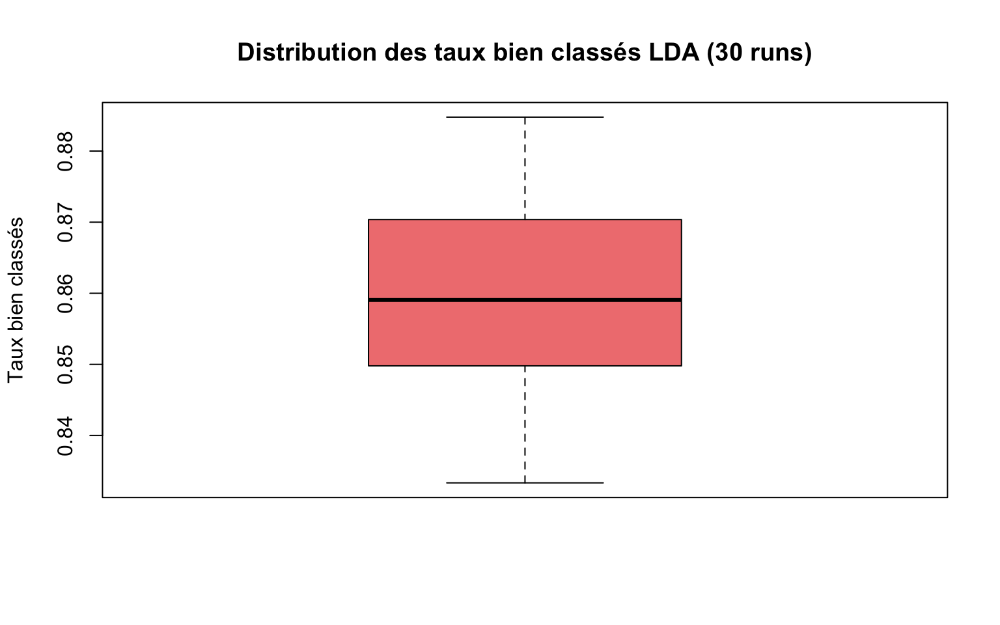
La validation croisée 2-blocs sur 30 répétitions donne un taux moyen de 85.97% avec un écart-type de 1.45%. Comme cette performance reste proche du taux d’apprentissage (87.15%), on ne voit pas de signe majeur de sur-ajustement. La LDA semble suffisamment stable pour conclure qu’une séparation linéaire capte une part importante du signal, même si elle n’est pas parfaite
9. Comparaison des modèles
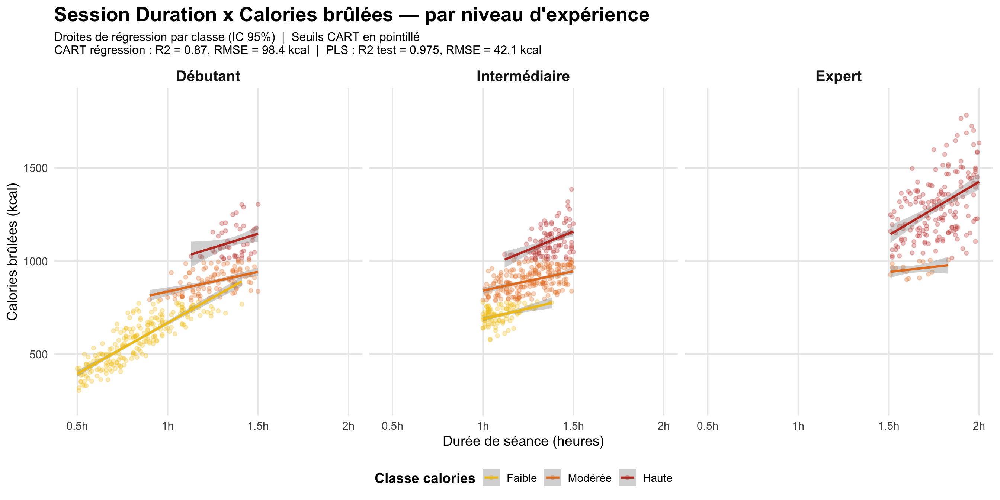
Cette figure met en évidence une relation positive entre la durée de séance et les calories brûlées dans les trois niveaux d’expérience. Les droites de régression montrent que, quel que soit le profil, une augmentation de la durée d’entraînement est associée à une augmentation de la dépense énergétique.
On observe également un effet du niveau d’expérience: à durée comparable, les individus experts présentent systématiquement des niveaux de calories brûlées plus élevés que les profils intermédiaires, eux-mêmes supérieurs aux débutants. Cela suggère une meilleure efficacité énergétique est liée aux expérimentés.
Les différences entre classes de calories confirment cette structure: la classe Haute se distingue par des valeurs plus élevées et une progression plus marquée avec la durée, tandis que la classe Faible reste associée à des niveaux plus bas de dépense énergétique. Cela indique que la durée seule n’explique pas entièrement la variabilité, mais qu’elle interagit avec le profil physiologique et le niveau d’entraînement.
Enfin, la comparaison des performances des modèles montre que, bien que le CART de régression fournisse une représentation simple et interprétable de la relation (R² ≈ 0.87), la PLS offre une meilleure précision prédictive (R² ≈ 0.975, RMSE plus faible). Cette figure illustre ainsi le compromis classique entre interprétabilité (CART) et performance (PLS) dans l’analyse des données.
10. Conclusion générale
Au total, le pipeline retenu est cohérent à la fois sur le plan méthodologique et sur le fond. L’ACP permet de comprendre la structure globale du jeu de données et montre qu’un axe principal oppose des profils plus entraînés, plus réguliers et à faible masse grasse à des profils moins performants.
Les méthodes supervisées convergent ensuite vers le même
message: Session_Duration est la variable la plus
importante, Avg_BPM affine fortement la
prédiction, Fat_Percentage et Experience_Level apportent
aussi une information utile, tandis que Workout_Type semble
relativement secondaire dans ce jeu de données. Cette convergence entre
plusieurs approches renforce la solidité des conclusions.
sessionInfo()R version 4.5.3 (2026-03-11)
Platform: aarch64-apple-darwin20
Running under: macOS Ventura 13.6.3
Matrix products: default
BLAS: /Library/Frameworks/R.framework/Versions/4.5-arm64/Resources/lib/libRblas.0.dylib
LAPACK: /Library/Frameworks/R.framework/Versions/4.5-arm64/Resources/lib/libRlapack.dylib; LAPACK version 3.12.1
locale:
[1] en_US.UTF-8/en_US.UTF-8/en_US.UTF-8/C/en_US.UTF-8/en_US.UTF-8
time zone: Europe/Paris
tzcode source: internal
attached base packages:
[1] stats graphics grDevices utils datasets methods base
other attached packages:
[1] NbClust_3.0.1 randomForest_4.7-1.2 rpart_4.1.24
[4] pls_2.9-0 MASS_7.3-65 factoextra_2.0.0
[7] FactoMineR_2.13 tidyr_1.3.2 dplyr_1.2.0
[10] ggplot2_4.0.2
loaded via a namespace (and not attached):
[1] gtable_0.3.6 xfun_0.56 bslib_0.10.0
[4] htmlwidgets_1.6.4 ggrepel_0.9.7 lattice_0.22-9
[7] vctrs_0.7.1 tools_4.5.3 generics_0.1.4
[10] tibble_3.3.1 cluster_2.1.8.2 pkgconfig_2.0.3
[13] Matrix_1.7-4 RColorBrewer_1.1-3 S7_0.2.1
[16] scatterplot3d_0.3-45 lifecycle_1.0.5 compiler_4.5.3
[19] farver_2.1.2 stringr_1.6.0 git2r_0.36.2
[22] leaps_3.2 httpuv_1.6.16 htmltools_0.5.9
[25] sass_0.4.10 yaml_2.3.12 later_1.4.8
[28] pillar_1.11.1 jquerylib_0.1.4 flashClust_1.1-4
[31] DT_0.34.0 cachem_1.1.0 nlme_3.1-168
[34] tidyselect_1.2.1 digest_0.6.39 mvtnorm_1.3-5
[37] stringi_1.8.7 purrr_1.2.1 labeling_0.4.3
[40] splines_4.5.3 rprojroot_2.1.1 fastmap_1.2.0
[43] grid_4.5.3 cli_3.6.5 magrittr_2.0.4
[46] utf8_1.2.6 withr_3.0.2 scales_1.4.0
[49] promises_1.5.0 estimability_1.5.1 rmarkdown_2.30
[52] emmeans_2.0.2 otel_0.2.0 workflowr_1.7.2
[55] evaluate_1.0.5 knitr_1.51 mgcv_1.9-4
[58] rlang_1.1.7 Rcpp_1.1.1 glue_1.8.0
[61] rstudioapi_0.18.0 jsonlite_2.0.0 R6_2.6.1
[64] fs_1.6.7 multcompView_0.1-11